J&A · Reference procedure · Scope stated on this page
BBS · Project to client invoices
An illustrated BBS worked lab and Owner operating reference.
English instructions · Actual application captures · Downloaded invoice PDFs included.
Training project: BBS · Ejemplo de manual Project number: C-0050-P-20261005
Example
Approved sources
Final training invoice PDF
Stage 1 · 1–4 October
35 actual hours
USD 2,230 labor
Expenses · October
4 expenses; USD 230 spent
USD 182 customer expense recovery
Stage 2 · 5–11 October
7.5 actual hours; hour/day/week units
USD 2,260 labor
Use the contents pages to find a task. Each chapter gives the role, exact navigation path, fields to fill and buttons to click. Important forms have a separate enlarged screenshot page. Saved example names/descriptions are quoted exactly as displayed, including their original record language.
J&A · Reference procedure · Scope stated on this page
Contents · Course tasks (1/4)
Click a chapter link where supported, or go to its printed page number. Large screenshot pages follow their instructions.
J&A · Reference procedure · Scope stated on this page
Start here · Owner access and this guide
This guide combines a saved BBS worked example with operational instructions for the Owner. It is not proof that every possible contract, integration or exception was exercised. The verification chapter distinguishes browser-tested operations from source-checked reference instructions.
Open the portal link provided by the company. Sign in with your own Owner account; review your name and role before changing business records. The first Owner is provisioned by the platform operator. An existing Owner creates the rest of the team in the application.
Choose your interface language from the account/navigation language control. On a phone, open the navigation menu to reach the same named workspaces.
Open Help for the relevant manual. Use this BBS guide for the lab and financial cycle; Administration, finance and audit is the broader reference.
If login or account access fails, use the account recovery offered on the sign-in page or contact the company administrator. Another person’s credentials are not an account-switching feature.
J&A · Reference procedure · Scope stated on this page
Before practising · obtain a separate training environment
Ask the platform operator for a separately provisioned training URL and your own authorized training account.
Obtain a visible deployment/environment identifier, the permitted fictional project/date scope and the agreed reset or cleanup procedure. Verify these before any write.
If that environment is unavailable, read the isolated demonstrations without repeating their transactions. Inspect live records only within your existing authority; use genuine evidence for live actions.
Do not use another person’s credentials. Training credentials and the operator’s local test address are deliberately not published here.
Page context label
How to read the example
Original BBS pre-issue
Saved fictional original sources and historical pre-issue snapshots. Drafts/unpaid values describe that capture time.
Isolated BBS lifecycle
The copied original BBS sources, issued masters and simulated receipt/payment/reimbursement events. Read-only demonstration unless training is provisioned.
Separate onboarding lab
Fictional C-0050-P-20261006 for entry/reports/planning; C-0050-P-050901 for supplier/empty-project lifecycle. These are outside original BBS exports.
New Accounting demo
Separate synthetic portfolio and C-0002-P-002 financial/weekly examples, including separately preserved August and October Accounting snapshots. They do not replace original BBS outputs.
Reference procedure
Inspected controls/source logic or arithmetic; a browser pass is stated only for the explicitly tested action.
J&A · Reference procedure · Scope stated on this page
Account/person administration versus dated chief delegation and entry on behalf of a crew.
Time / Expenses / Approvals
Actual sources, evidence, submission, operational review and Finance treatment.
Reports
Daily and Technical / PLC facts; reviewed period files and separate Client Sign-off.
Finance Overview
Portfolio financial position and attention; open the underlying project before changing a figure.
Economic Review
Project potential charges, costs, compensation, contribution and settlement/payment registers.
Commercial Configuration
Dated policies, expense classification and project issuing authority.
Project → Billing
That project’s people/defaults, invoice settings and project finance export.
Billing → Invoices / Collections
Cross-project invoice lifecycle, dispatch, collections and ledger reconciliation.
Accounting / Documents / Audit
Period packs; private files and outputs; preserved history.
Planning / Notifications / Profile / Help
Future assignments and availability; attention; own settings; instructions.
J&A · Reference procedure · Scope stated on this page
Person, role, assignment and review permission
Layer
What it grants / what to verify
Person record
A named person/contact; search before creating another person with the same identity.
Account and access role
Sign-in and platform permissions. Active access does not automatically assign a project.
Project assignment
Participation for its dated interval. Work and settlement periods must fall within that coverage.
Review authority
Permission to review the applicable project/source; a worker cannot self-approve by becoming chief.
Crew-chief delegation
Entry for named assigned colleagues over a dated interval, separately from their platform role.
Supplier relationship
External technician/coordinator restrictions and permitted supplier payee; review the supplier link.
Verify each layer before asking a worker to enter time. A missing project in their selector usually means checking active access and dated assignment first.
When someone leaves, close permitted access and future assignments/delegations while keeping their approved historical sources. Review ongoing work and pay obligations separately.
J&A · Reference procedure · Scope stated on this page
Search the Team directory by name/email. Click Create user. In Create user access, choose the existing person when the person already exists, or enter the new person’s Name, Email and optional contact details.
Choose the permitted Access role. External technician and Supplier coordinator require the correct supplier; they are different from unrestricted internal workers.
For a local account select Set email and password. Supply the correct email and a password of at least 12 characters. Click Create user access and confirm the saved account in Team. This action does not send an email.
Alternatively choose Invitation link. Review the generated private activation link and share it using the company’s trusted channel. Treat the link as an access secret; the application does not imply automatic email delivery.
Open the project’s Team tab and assign that person with dates covering the work. Add crew delegation separately in Crew when needed. Ask the worker to sign in with their own credentials and confirm project visibility.
J&A · Separate onboarding lab · Read-only demonstration
Owner · create local access before assignment
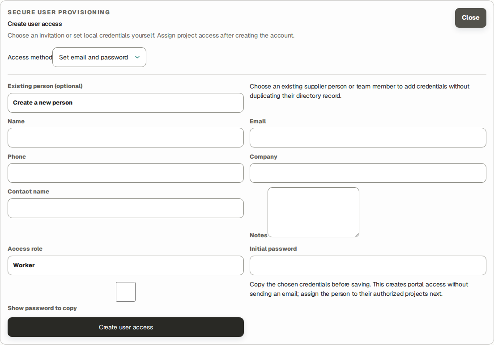
Isolated training browser: Set email and password and Create user access. This creates an account without sending an email; project assignment is a separate action.
J&A · Separate onboarding lab · Read-only demonstration
Owner · new active training account, zero assignments
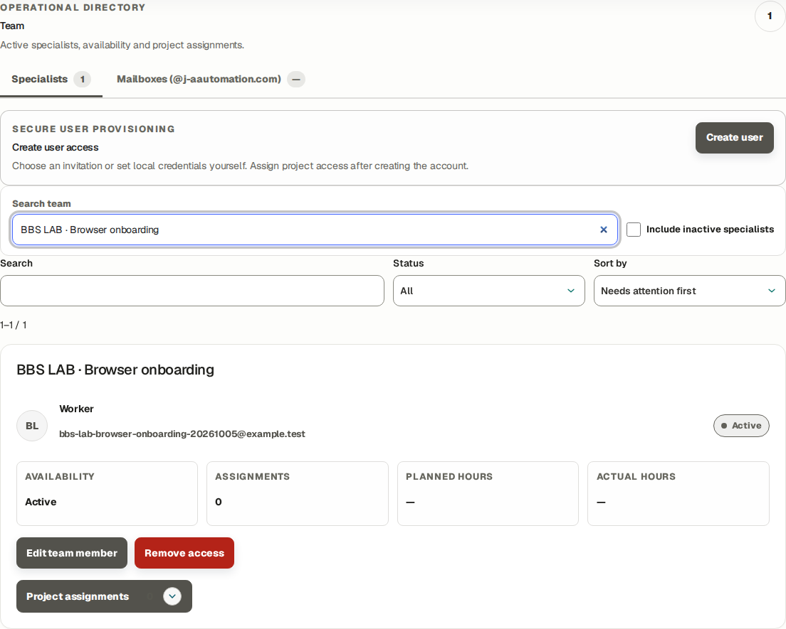
The BBS LAB account was created in isolation and initially had zero project assignments. Active access alone is not project participation.
J&A · Original BBS pre-issue · Historical snapshot
Two learning paths · inspect or build
Path
Starting state and action
Inspect the saved example
Open BBS · Ejemplo de manual, C-0050-P-20261005. Inspect sources, dated terms and outputs. Do not recreate it or edit earlier locked agreements merely to match an illustrative screenshot.
Build your own project
Use a separate client/project and real agreed values. Follow account → assignment → dated terms → reporting/issuer/stream prerequisites before recording work.
Complete the training financial cycle
Use an isolated copy of the fictional BBS example. Final training PDFs are included at the end. Synthetic approval/payment entries are demonstrations.
For an existing project, start at its first unfinished prerequisite. Locate the saved project by number, not only a similar name.
For a new project, prepare the Initial-data sheet before the first workday. Enter initial terms before the first workday, then add later agreements with later effective dates.
Use the checkpoints after each stage; a form filled in the browser is not a saved agreement until its save succeeds and it can be reopened.
J&A · Original BBS pre-issue · Historical snapshot
Click Projects. Click More actions, then New Client. The panel heading is Create client.
Fill the legal name, display name, currency and timezone. Fill billing address and either billing email or the required billing contact name. Set agreed payment terms and the PO/reference. Click Create client.
Click Projects → New Project. In 1 · Basics, select the saved client. Fill the project name and cost center. Choose currency. Review the optional description, alias and manager.
Continue through 2 · People and 3 · Commercial defaults as explained on the following pages. Fill the start date and timezone, and select the applicable reporting/budget choices.
Click Create project once. Reopen the saved project, check its number and team, and use Edit project to review/update the PO and remaining project details.
J&A · Original BBS pre-issue · Historical snapshot
Expand Project defaults for people (optional) if new assignments should start from common terms. Select the save-defaults checkbox and fill the dated agreement.
Expand Worker assignments (optional). Click Add worker assignment. Select an active Worker; fill Starts on and optional Ends on.
Select Terms source: Use project defaults or Override for this person. For an override, fill customer billing unit/rate, internal cost, worker compensation and expense terms.
Add another row for each worker. Remove removes that unsaved row, not an existing worker account.
Click Create project only after reviewing the complete form. These illustrative screenshots do not save another BBS project.
J&A · Original BBS pre-issue · Historical snapshot
Optional assignments · worker, dates and terms source
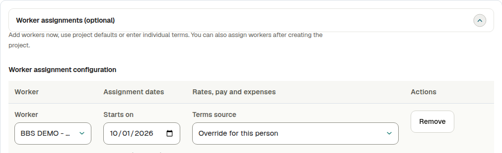
Choose Worker and assignment dates first. Choose Override for this person to reveal the individual fields. The toolbar is excluded from this new capture.
J&A · Original BBS pre-issue · Historical snapshot
Optional assignment · individual terms enlarged
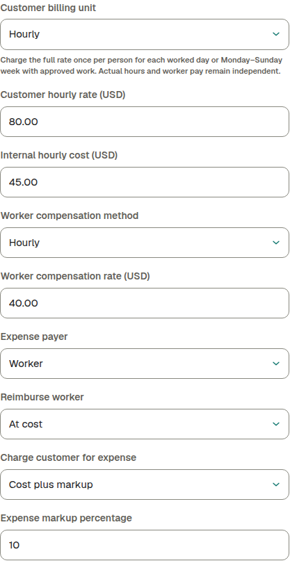
Individual charge, worker compensation and expense treatment in the creation form. Fill each value and review the selected payer; creating the project saves the configured rows.
J&A · Separate onboarding lab · Read-only demonstration
Owner · assign the account to a dated project
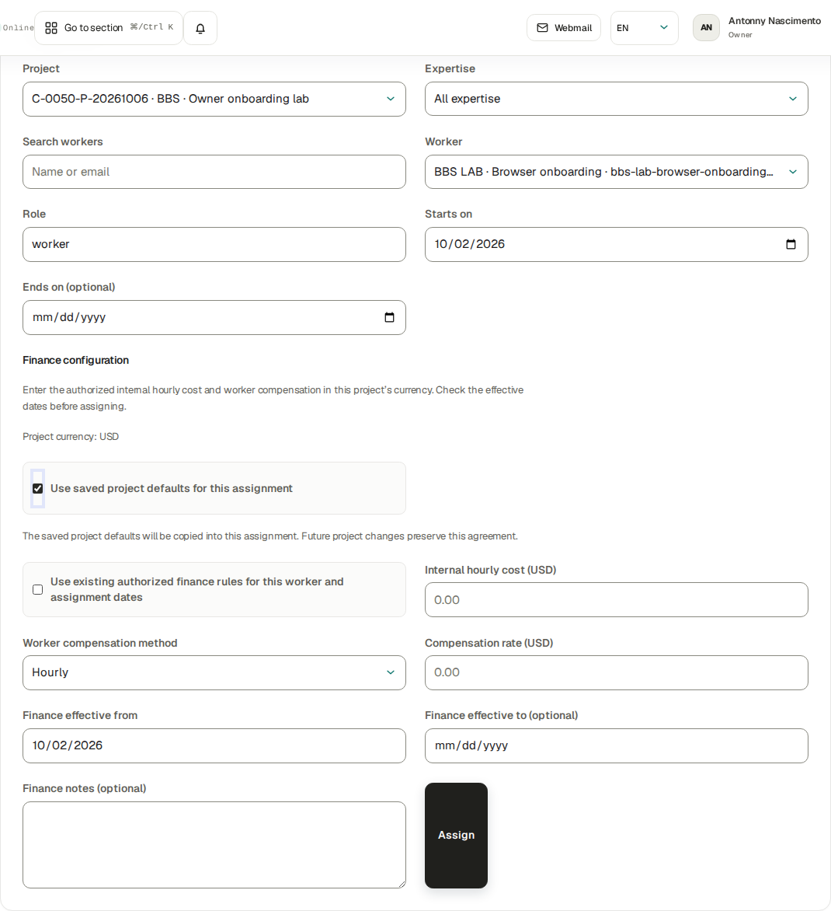
Projects → More actions → Assign Worker: select project/person, start date and authorized finance/defaults; click Assign. The isolated onboarding lab is C-0050-P-20261006.
J&A · Separate onboarding lab · Read-only demonstration
Owner · account now has one saved assignment
After Assign, the newly created BBS LAB worker has one active assignment. Account and assignment steps were both saved and reopened.
J&A · Original BBS pre-issue · Historical snapshot
Initial data sheet · before the first work record
Item
Required initial state
Project / client
Fictional BBS project in USD, America/New_York site timezone, start and all three assignments from 1 October 2026, with no saved assignment end.
People
Active chief, technician 1 and technician 2 worker accounts; all assigned to this project.
Chief USD 40/hour. Saved training rules include technician 1 USD 240/day and technician 2 fixed USD 900 per selected settlement period effective 2 October. Inspect their earlier dated rules rather than inferring pay from customer rates.
Later customer change
From 5 October: chief USD 80/hour, technician 1 USD 600/day and technician 2 USD 1,500/week. Earlier customer work keeps its hourly terms.
Delegation
Saved chief-to-technician delegations run 1–31 October 2026, covering the initial crew entry. All three project assignments have can_review = false; chief delegation grants entry, not approval.
Expenses
Policies for worker/company payer, reimbursement and customer recovery; receipt/evidence and currency requirements.
Invoice readiness
Dated issuer authority, currency/tax compatibility, streams, reporting/sign-off requirements and final numbering policy.
J&A · Original BBS pre-issue · Historical snapshot
Project defaults and person overrides
Go here: Owner → Projects → open BBS · Ejemplo de manual → Billing → Configure project defaults; then Configure this project’s invoices → 3. Review each person Live company portal · open this workspace
Open the saved project and click its Billing tab. Expand Configure project defaults under Project defaults for people. Fill the effective date and default terms, then save.
Under Configure this project’s invoices, click the numbered 3. Review each person step. This is project configuration, not the invoice-creation dialog.
In Person, choose the required worker and click Go to person. Fill that person’s dated charge, pay and expense agreement.
Click Save person terms. Wait for confirmation and reopen/reload to check persistence. Repeat for the other workers.
Use Copy draft terms from and the selection boxes only when people intentionally share terms. Review every selected person and effective date before Save selected people.
J&A · Original BBS pre-issue · Historical snapshot
Where to find Review each person
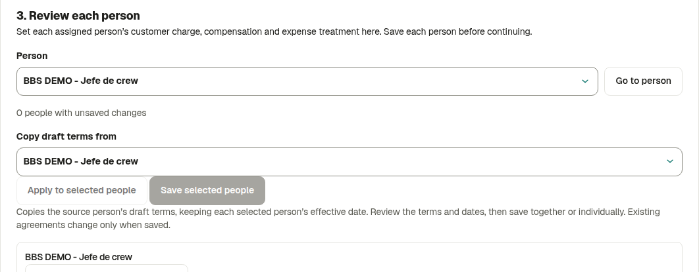
Project → Billing → Configure this project’s invoices → 3. Review each person. Use Person and Go to person; each worker has a separate Save person terms button.
J&A · Original BBS pre-issue · Historical snapshot
Effective dates, overrides and bulk controls
Control
Meaning / action
Terms effective from
The date on which the new agreement applies. Keep earlier work/rates unchanged by choosing the intended later date.
Use project defaults in this draft
Copies current defaults into the draft only. Review and click Save person terms to apply.
Save these rates as explicit person overrides
Pins even matching rates as deliberate person agreements. Later project-default changes do not erase those overrides.
Select this person for bulk actions
Select only people who should receive the bulk draft.
Copy draft terms from / Apply to selected people
Copies draft terms; review every selected person and date before saving.
Save selected people
Saves the selected agreements after validation, not every unselected worker.
Same-date agreement warning
Existing terms on the same date are immutable; choose a later effective date rather than trying to overwrite them.
J&A · Original BBS pre-issue · Historical snapshot
Translate the contract into independent settings
Business agreement
Configure and verify
Customer daily minimum, hourly worker
Set the customer minimum on the hourly commercial model; keep worker Hourly pay on approved actual hours. A minimum adds customer charge, never fictitious time.
Daily customer price / daily worker price
Set each independently. Customer Daily is a full eligible worked-day unit; worker Daily uses the saved compensation rule and eligible days. Compare separate charge and pay totals.
Included customer expenses, reimbursable worker receipt
Use included-in-labor customer recovery and the worker’s reimbursement source/payer policy. Included customer pricing does not cancel a worker obligation.
Capped T&M
Configure the agreed ceiling/budget; inspect budget consumption and alerts before invoicing the next period. Do not replace the cap with a guessed rate.
Fixed-period worker pay
Choose the settlement period deliberately. USD 900 per selected period is not USD 900 per time part or an automatic weekly schedule.
Percentage compensation
Select the precise eligible labor basis and trigger (approved labor, invoice issue or client payment). Expenses/tax are not automatically included.
J&A · Original BBS pre-issue · Historical snapshot
In 2. Billing details, J&A Automation is selected by default for the matching project currency. Review it when setting up new or existing projects.
Check billing contact, recipient and payment terms. Selecting a project in New billing stream fills available project/client currency, PO, contact, email and terms.
Select Standard, Detailed or Summary layout, and grouping by worker, day, category, detail or summary. These options affect presentation, not approved source money.
Choose applicable labor and expense tax profiles if configured. The example has no tax profile; do not invent tax settings to copy it.
Automatically preparing drafts is optional. It is disabled in the training project. Invoices are never automatically issued or sent by this setup.
J&A · Original BBS pre-issue · Historical snapshot
Project billing · issuer, taxes, cadence and delivery
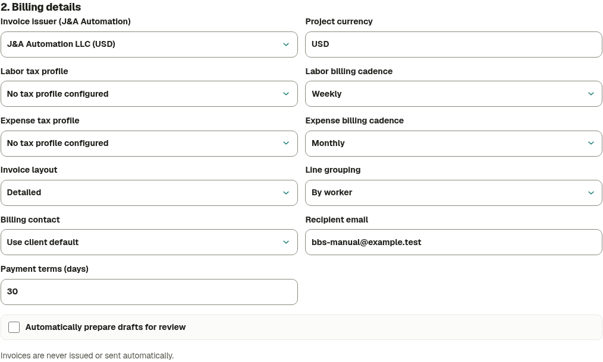
2. Billing details. Review issuer/currency, tax, cadence, layout, grouping, recipient and terms before saving.
J&A · Original BBS pre-issue · Historical snapshot
Set the separate worker compensation method to Hourly, USD 40/h. The USD 80 customer charge is not the worker’s pay.
For worker-paid expenses use at-cost reimbursement and client recovery with 10% markup.
Save and reload. In stage 1, ten actual hours produce USD 800 customer labor and USD 400 expected compensation. No compensation payment is recorded.
J&A · Original BBS pre-issue · Historical snapshot
Person terms · customer charge, cost and worker pay
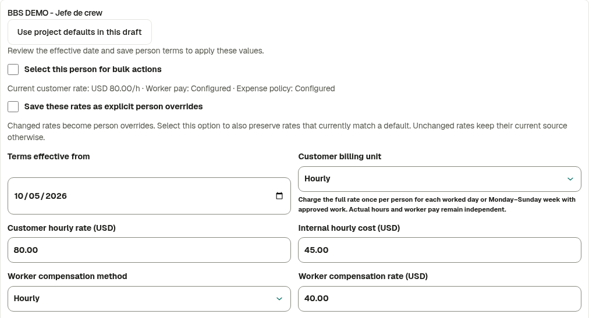
Later agreement form: fill Terms effective from, customer billing unit/rate and independent worker method/rate. Before initial 2 October work, use the earlier agreements listed in Initial data sheet; this later screenshot is not initial-date coverage.
J&A · Original BBS pre-issue · Historical snapshot
Person terms · reimbursement and customer expense recovery
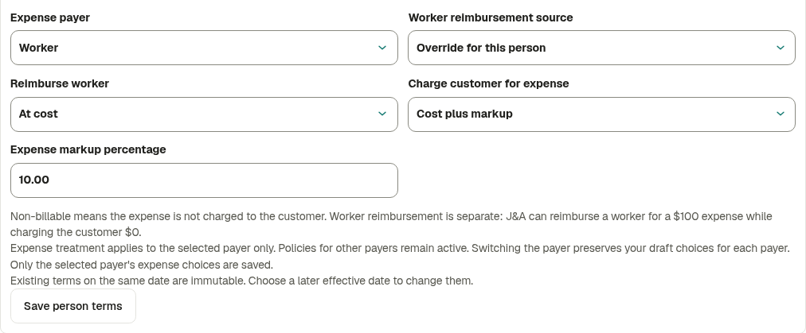
Choose Expense payer, reimbursement source, reimbursement and customer recovery. Save the selected payer’s policy; policies for other payers remain separate.
J&A · Original BBS pre-issue · Historical snapshot
Keep worker pay Daily, USD 240/day, with internal cost USD 35/h. Customer daily charge and worker daily pay are separate fields.
Keep worker-paid expenses, project-default reimbursement and client recovery at cost.
Click Save person terms and reload. Two approved billable parts of 1.5 h and 0.5 h on one day charge one full day: USD 600.
J&A · Original BBS pre-issue · Historical snapshot
Person terms · customer charge, cost and worker pay
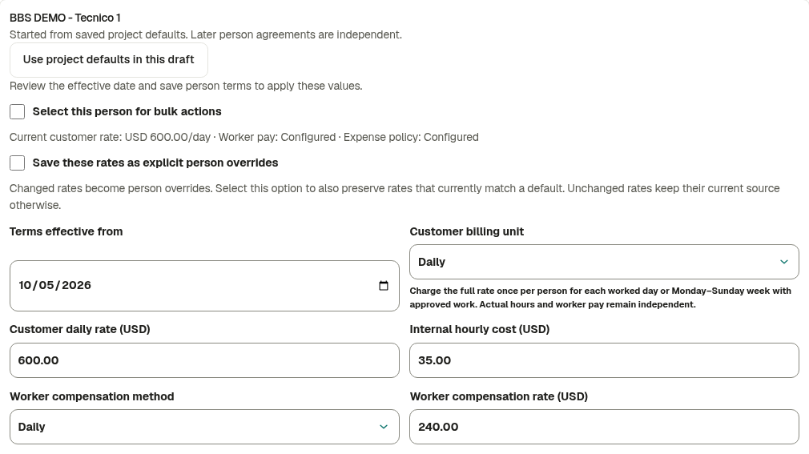
Later agreement form: fill Terms effective from, customer billing unit/rate and independent worker method/rate. Before initial 2 October work, use the earlier agreements listed in Initial data sheet; this later screenshot is not initial-date coverage.
J&A · Original BBS pre-issue · Historical snapshot
Person terms · reimbursement and customer expense recovery
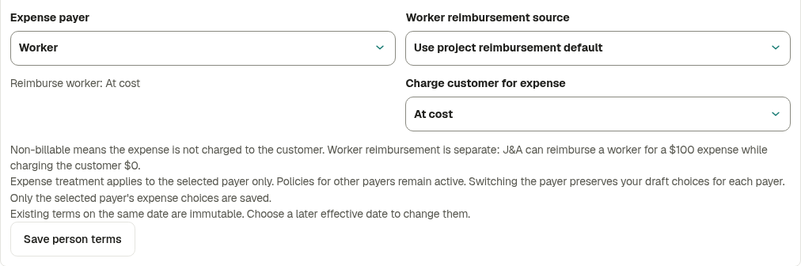
Choose Expense payer, reimbursement source, reimbursement and customer recovery. Save the selected payer’s policy; policies for other payers remain separate.
J&A · Original BBS pre-issue · Historical snapshot
Keep worker compensation Fixed per billing period, USD 900, and internal cost USD 30/h. The compensation period is not automatically the customer weekly charge unit.
Use Company card for expenses, no worker reimbursement and expenses included in labor price.
Save and reload. Check USD 1500/week and confirm the compensation and expense choices were preserved.
The customer week is Monday–Sunday. Two approved billable parts of 2 h and 1.5 h in the same week charge USD 1500 once.
J&A · Original BBS pre-issue · Historical snapshot
Person terms · customer charge, cost and worker pay
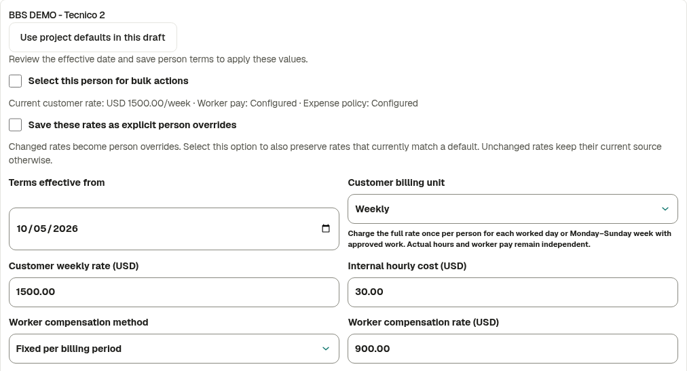
Later agreement form: fill Terms effective from, customer billing unit/rate and independent worker method/rate. Before initial 2 October work, use the earlier agreements listed in Initial data sheet; this later screenshot is not initial-date coverage.
J&A · Original BBS pre-issue · Historical snapshot
Person terms · reimbursement and customer expense recovery
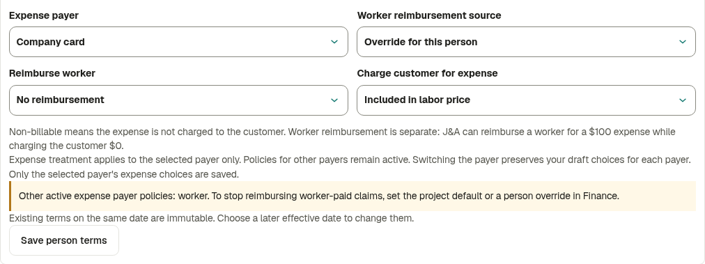
Choose Expense payer, reimbursement source, reimbursement and customer recovery. Save the selected payer’s policy; policies for other payers remain separate.
J&A · Original BBS pre-issue · Historical snapshot
More compensation and expense options
Go here: Owner/Finance → project → Billing → 3. Review each person; additional policies: Finance → Commercial Configuration Live company portal · open this workspace
Compensation method
How to use it
Hourly
Rate for eligible actual hours.
Daily
Daily compensation under its applicable rules.
Fixed per billing period
One configured amount for the applicable settlement period.
Fixed project amount
A project-level fixed agreement; review its settlement.
Percentage of eligible client labor
Configured percentage and eligible labor basis; not a percentage of every expense or tax.
Expense choice
Effect
Worker
Can reimburse at cost or not reimburse.
Company card / Company direct
Company pays; do not reimburse the worker.
Client / Third party
Identify the actual payer and review the applicable policy.
At cost / Cost plus markup
Recover the source cost or source cost plus markup from the client.
Included / Do not charge / Client pays directly
No additional labor-inclusive charge, nonbillable recovery or direct client payment.
J&A · Original BBS pre-issue · Historical snapshot
Customer unit and worker compensation · two decisions
Customer billing unit
Calculation
Hourly
Eligible approved billable duration × the dated hourly customer rate.
Daily
Full configured customer rate once for a person/project/worked day with eligible approved work. A partial day is still a full unit.
Weekly
Full configured customer rate once for a person/project/Monday–Sunday worked week with eligible approved work. A partial week is still a full unit.
Worker compensation
Meaning
Hourly / Daily
Worker’s own rate and applicable actual/approved-hour or daily rules. These are not the customer charge.
Fixed per billing period
Configured amount for the applicable compensation/settlement period; not another amount for each time part.
Fixed project amount
Project fixed agreement; review its settlement rather than multiplying it by hours.
Percentage of eligible client labor
Fill the percentage and choose the eligible labor basis: before tax, after approved discount, issued or collected eligible labor. Expenses/tax are not automatically part of that basis.
J&A · Original BBS pre-issue · Historical snapshot
Configure overtime · separate customer, worker and cost rules
Inspect the work categories and agreed dated terms. If the contract derives overtime after a threshold, select Project commercial policy and review Derive overtime after the threshold and Overtime threshold (minutes). Do not invent a threshold to manipulate recorded work.
Select Client labor rate: review Overtime method and Overtime multiplier. Separately select Worker compensation: Worker overtime method and Worker overtime multiplier. Separately select Internal loaded cost: its overtime method/multiplier.
Enter approved dated terms. Multiplier fields use human multipliers such as 1.50. Offered methods include None, Fixed rate and Fixed addition per hour; worker compensation also offers Percentage of eligible overtime.
Review eligible approved Labor source amounts for the same worker/date/category. Confirm actual time, charge, compensation and internal cost independently.
Reference calculation: two eligible overtime hours
Amount
Customer USD 100/h × 1.50 × 2 h
USD 300
Worker USD 40/h × 1.25 × 2 h
USD 100
Internal cost USD 50/h × 1.20 × 2 h
USD 120
J&A · Original BBS pre-issue · Historical snapshot
Percentage compensation · precise basis and trigger
Select Worker compensation, the worker and Rule type: Percentage of eligible client labor. Fill Percentage, Percentage basis, Settlement trigger and effective dates.
Choose the exact basis: Client labor before tax, Client labor after approved discount, Issued eligible labor or Collected eligible labor. Check that the relevant client labor rate is percentage-eligible.
Choose the trigger: Approved billable labor, Invoice issue or Client payment. Inspect actual source eligibility and allocations before finalizing a settlement; a dropdown selection does not prove the trigger has occurred.
Review the finalized basis, reviewed amount, payee and period before registering a real payment.
Reference calculation
Conditional result
25% of USD 1,000 issued eligible labor
USD 250 when the issue/basis conditions are met.
25% of USD 400 collected eligible labor
USD 100 when eligible collection allocations support it.
J&A · Original BBS pre-issue · Historical snapshot
Daily minimum, caps and forecast · reference exercises
Contract / exact distinction
Configure, verify and recover
Hourly customer daily minimum
Project Client daily minimum hours is separate from Daily full-unit billing. Example: actual 2 h, minimum 8 h, customer USD 100/h → USD 800; worker USD 40 per actual hour → USD 80 unless a separate worker guarantee applies. Keep actual time at 2 h. Review Daily minimum adjustments and grouped sources.
Cap / purchase order
Inspect the saved PO cap/revenue budget, currency, Billing readiness and remaining cap. Verify which issued subtotal/period counts. A budget warning is not proof of contractual cap compliance or permission to issue more.
All-in price
Customer included expense recovery can be zero while a worker remains reimbursable. Inspect actual payer, compensation and company costs independently.
Milestone
The Milestone stream uses approved unbilled project milestone sources. Check source amount, dates, issuer/tax and stream before draft/issue. Empty BBS Milestones is not a successful milestone exercise.
Forecast
Compare estimate-to-complete, estimate-at-completion cost and expected final margin to the approved actual basis. A revised forecast creates no actual hours, payroll payment or customer receipt.
J&A · Original BBS pre-issue · Historical snapshot
Assign the crew and chief
Go here: Owner → Projects → project → Team for memberships; then Crew → select project → Show project → Assign a crew chief Live company portal · open this workspace
Open Projects → BBS training project → Team. Assign the three active worker accounts with assignment dates covering the work. New workforce accounts must exist and be active before they can be chosen.
Click Crew. Select the BBS training project and work date, then click Show project. Owner sees Assign a crew chief.
Select Chief and one Team member. Fill Effective from and optional Effective until. Click Assign chief. Repeat for the second team member.
The chief signs in to their own worker account and opens Crew. Select the project/date. Only delegated, assigned people are available.
Use Log team hours, choose members and shared or different hours. Fill category and Work performed. Choose draft or Submit for approval now, then click the save button showing the member count.
J&A · Original BBS pre-issue · Historical snapshot
Owner · assigning the crew chief
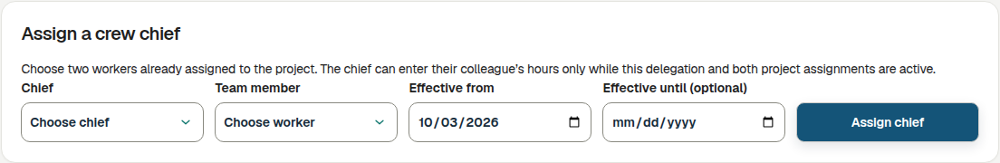
Illustrative form: Crew → Show project → Assign a crew chief. The captured draft date is later than the first workday. Saved example delegations actually cover 1–31 October; use dates covering the work, including 2 October.
J&A · Separate onboarding lab · Read-only demonstration
Supplier setup and personnel · exact tested controls
In Setup and access, search existing suppliers. Fill Name and optional Email, Phone, Address and Notes, then Add supplier. Reopen the saved supplier.
Create the external person’s account in Team with its approved role and supplier-linked profile. Provision a Supplier coordinator as well: the installation authorization requires an eligible coordinator from that supplier.
In Authorize installation, select Supplier, Installation / project and Supplier coordinator; fill Starts on, optional Ends on, then Authorize installation. Verify the Active authorization.
In Personnel → Assign existing technician, select the eligible technician/project and dated interval, then save the assignment. The future-dated lab assignment showed Future, not already-worked hours.
Verify project team and supplier authorization independently. Internal crew delegation neither creates the supplier relationship nor grants supplier finance access. Check supplier operational-reporting details in the separate Supplier operations guide.
J&A · Separate onboarding lab · Read-only demonstration
Supplier setup, profile and installation authorization
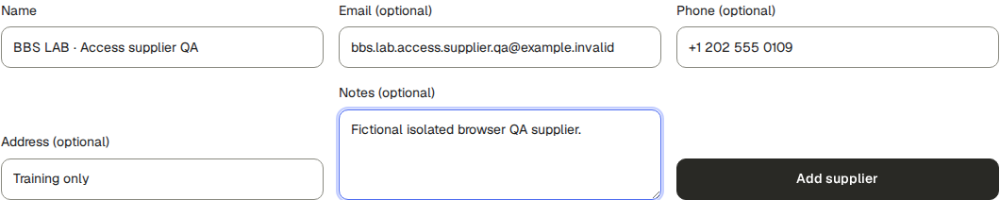
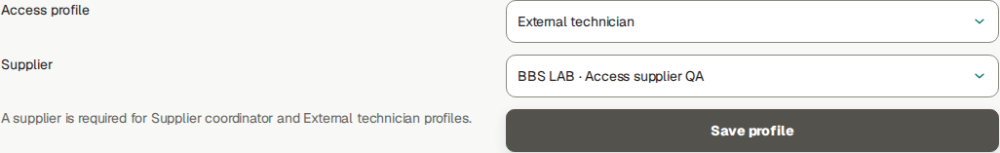
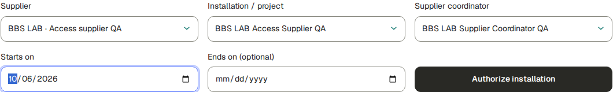
Separate supplier lab: Add supplier; supplier-linked External technician profile; Authorize installation with coordinator and dates. These are three separate saved permissions, not a single employee setup.
J&A · Separate onboarding lab · Read-only demonstration
Inspect the account’s base Role separately from its Access profile. In the lab, Worker had External technician plus the supplier link; Worker → Project Manager → Worker saved. The profile editor was unavailable for Project Manager.
For an external Worker, choose Access profile and required Supplier, then Save profile. The lab changed External technician → Supplier coordinator → External technician, preserving that link.
Before ending access, review actual work, future assignments/delegations and financial obligations. Use Remove Assignment with the required factual reason. The empty lab’s future assignments were cancelled before start; historical rows remain.
On the supplier authorization use Revoke access. The lab retained the authorization row as Revoked.
For the ordinary technician account, use Remove access and review Remove this team member access? before confirming. It disappeared from the active Team filter; this is not proof of hard deletion of historical records.
J&A · Original BBS pre-issue · Historical snapshot
Separate labor and expense billing streams
Go here: Owner/Finance → Billing → Configure billing → New billing stream; alternatively project → Billing → Configure this project’s invoices Live company portal · open this workspace
Click Billing. Click Configure billing, then New billing stream. The form appears below the three setup directories; scroll down if it is offscreen.
Select Project. Review the prefilled currency, PO, terms and billing recipient/contact rather than typing them from memory.
Choose the stream type and cadence. Fill Effective from and any required anchor. Choose issuer, tax and template deliberately.
Review recipient, payment terms, PO override and automation. Click the form’s save/create button once and wait for confirmation.
Open Billing streams and review the saved dated rule. The BBS examples use a Manual labor period for 1–4 October, a Weekly labor stream from 5 October and Monthly expenses.
J&A · Original BBS pre-issue · Historical snapshot
Prerequisites · creating a billing stream
Before clicking Create
What to verify
Role / project
Owner or authorized Finance role; saved accessible project with compatible currency.
Open Finance → Project issuing authority. Review J&A’s legal revision and the project assignment dates.
A legal revision preserves the company identity and address effective at that time. Later revisions retain earlier history.
Consecutive assignments of the same revision may cover one continuous period: for example 28–30 September followed by 1 October onward.
If coverage has a real missing day, PDF generation stays blocked. The message identifies issuer, project, invoice period and missing dates, with the place to review the setup.
If a period crosses different issuer legal revisions, review or split the period. The app does not silently combine legal identities.
J&A · Separate onboarding lab · Read-only demonstration
Planning, skills and availability · tested lab cycle
Select the intended project/worker; inspect the displayed timezone. The tested Planning page uses UTC.
Expand Manage worker expertise → New expertise, fill Code and Name, then Save expertise. In Assign expertise, select Worker, Expertise and Proficiency, then Update expertise matrix. The lab saved Instrumentation QA at 3/5; skills do not grant project access.
Select Project and Workers; fill Start (UTC), optional End (UTC), Planned hours, Site and Required expertise, then Publish assignment. The lab published 6 October 09:00–11:00 UTC, 120 planned minutes.
In Published assignments, edit the same row and Save assignment. The lab saved 10:00–12:00 UTC and an updated site, then Cancel assignment. The day’s event disappeared and schedule count returned to zero.
In Profile, select Inspect worker → View worker profile. Use Add availability: Starts, Ends, Availability and Note → Save availability. The lab saved Tentative 12:00–15:00 UTC, then Edit availability changed the note. Check calendar/table after saving.
J&A · Original BBS pre-issue · Historical snapshot
Select Worker, Assigned project and Week of; click Open week. Review existing drafts and dated assignments before entering actual Hours, Category and Activity summary.
Leave unworked days empty. Review the actual entries and click Save daily drafts once. Blank days are skipped; inspect the saved register, not only filled input fields.
When ready, use Submit this week, select the Worker and click Submit all week drafts. Eligible linked correction drafts can be included with ordinary drafts in Submit all week drafts. The October readiness exercises verified both saved source IDs became Submitted and the draft count changed from two to zero. Individual Submit remains available for inspecting one precise replacement.
Select the destination Week of, then Copy previous week layout. Review the displayed Previous week and This week, then Add this week’s layout. Newly added drafts have zero hours; fill actual durations before submission. There are no editable Source/Destination date fields in this dialog.
If no rows were added, inspect existing drafts and assignment coverage instead of repeatedly copying.
J&A · Separate onboarding lab · Read-only demonstration
Owner · enter actual work in the weekly table
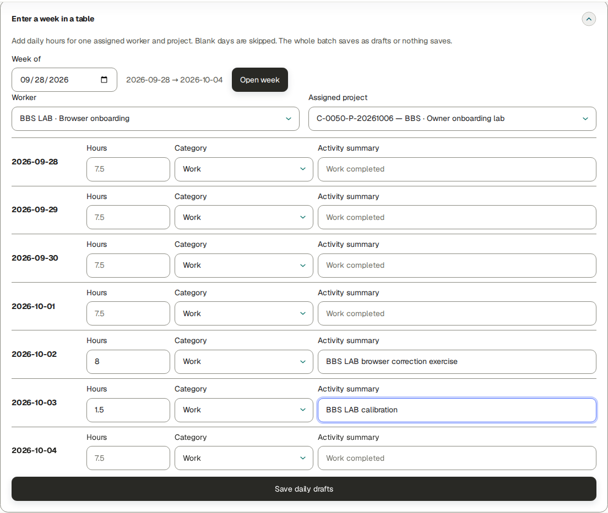
Isolated onboarding lab: week of 28 September, Friday 8 hours and Saturday 1.5 hours. Save daily drafts skips blank days; the saved result totals 9.5 hours.
J&A · Separate onboarding lab · Read-only demonstration
Saved original time and linked corrections · current register
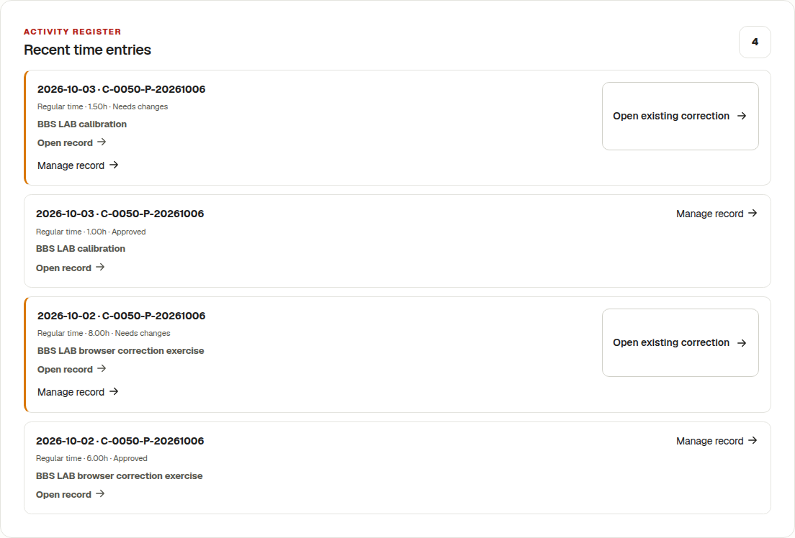
Separate onboarding lab, Browser onboarding worker: original 8 h and 1.5 h sources remain Needs changes, linked replacements 6 h and 1 h are Approved. The original submission was 9.5 h; the current approved replacement total is 7 h. Do not add both originals and replacements.
J&A · Original BBS pre-issue · Historical snapshot
As the worker, click Time, then the blue Log time button.
Choose Project and Date. Fill Actual hours in decimal form: 7.5 means seven hours thirty minutes. Select the actual work category and fill the activity summary.
If actual clocks are known, choose Add start and end times and enter the project-local start/end and real break. Keep duration-only work as duration-only when clocks were not recorded.
Click Save draft. Open the saved record from the register and click its available Submit action. To submit a complete reviewed week, use Submit all week drafts.
Check the saved record and calendar. Correct returned work through its permitted correction/edit flow; do not create another source to repeat an existing submission.
J&A · Original BBS pre-issue · Historical snapshot
Worker · Log time fields
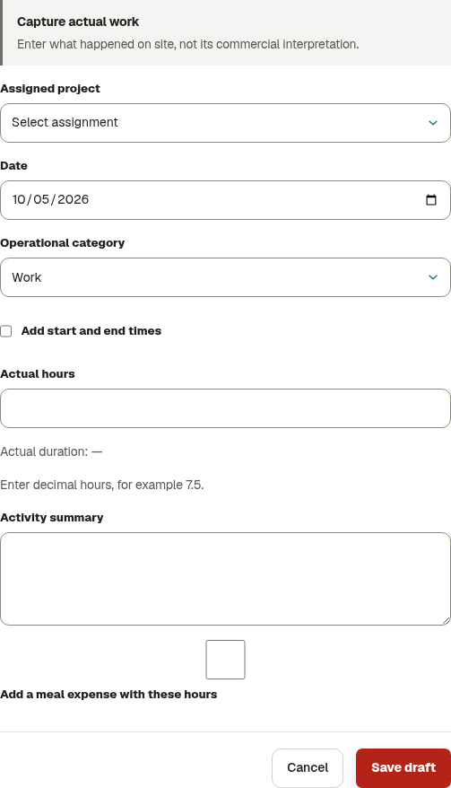
Time → Log time. Fill assigned Project, Date, actual duration/category and factual activity; use real clocks only when known.
J&A · Original BBS pre-issue · Historical snapshot
Chief · shared or individual team hours
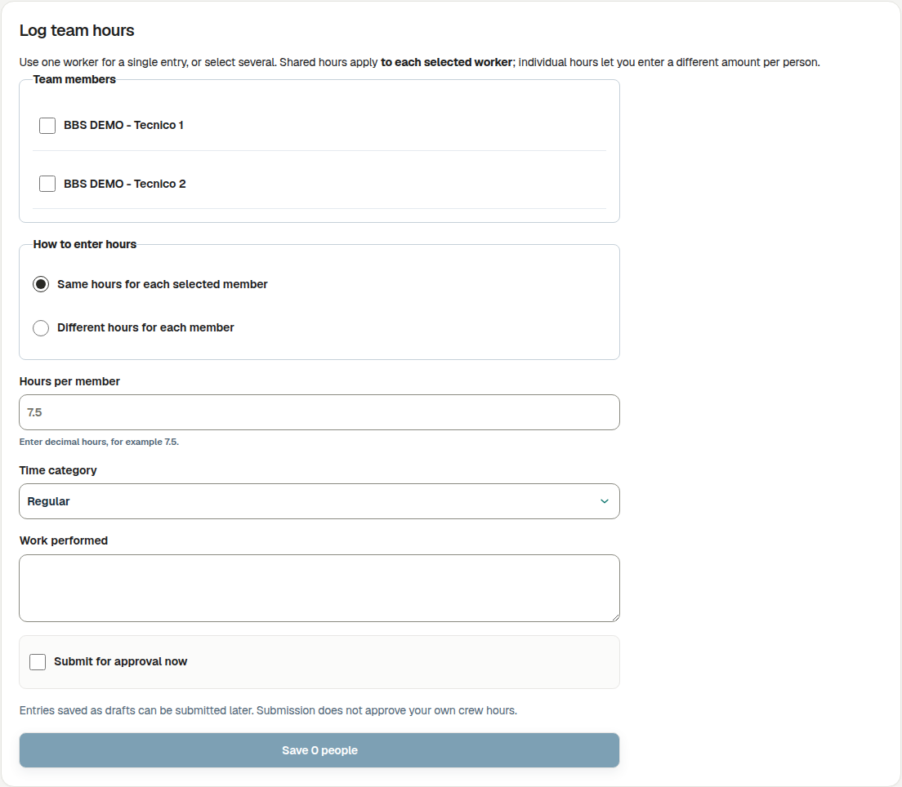
Select delegated members; choose Same hours for each selected member or Different hours for each member. Fill the actual hours and activity, then review draft/submission mode.
J&A · Original BBS pre-issue · Historical snapshot
As a worker click Expenses → Record expense. Choose the assigned project and actual expense date.
Select the actual Category. Enter vendor and factual description; fill amount and currency. Select the actual payer/payment method, and attach a receipt where required.
Choose Save draft, inspect the saved entry, then use Submit. Where the app pairs an expense with time, follow its notice and submit the pair through the weekly time workflow.
Examples: parking USD 20 paid by the chief; hotel USD 100 paid by technician 1; company-card tools USD 50 for technician 2.
For a shared crew meal, record one USD 60 receipt and two USD 30 allocations linked to the two technicians. Attach its evidence and submit through the supported crew workflow.
J&A · Original BBS pre-issue · Historical snapshot
Expense-entry fields · amount and evidence
Field
What to fill / why
Project / Worker / Date
The assigned project, entitled worker and actual purchase date; Owner’s on-behalf entry remains scoped.
Category / Description / Vendor
Choose what was bought and explain the business reason and supplier.
Amount / Currency
Real purchase value and original currency. Foreign currency may need verified conversion before billing.
Expense payer / payment method
Identify who actually paid: worker, company card/direct, client or third party. This determines which dated payer policy is resolved.
Receipt / Receipt required
Attach the required evidence. Do not claim a receipt exists when it has not been uploaded.
Time expense occurred / Related logged hours
Optional occurrence detail or supported link to the related time source.
Save draft / Submit
Draft is editable working data; submission starts review. Neither action reimburses a worker or invoices the client.
J&A · Original BBS pre-issue · Historical snapshot
Record expense · project, date and category
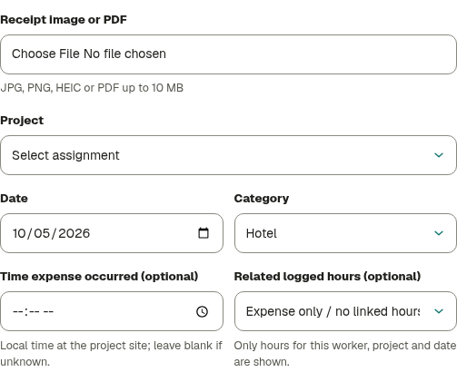
Expenses → Record expense. Start with the assigned project/date and the correct category.
J&A · Original BBS pre-issue · Historical snapshot
Record expense · amount, payer and evidence
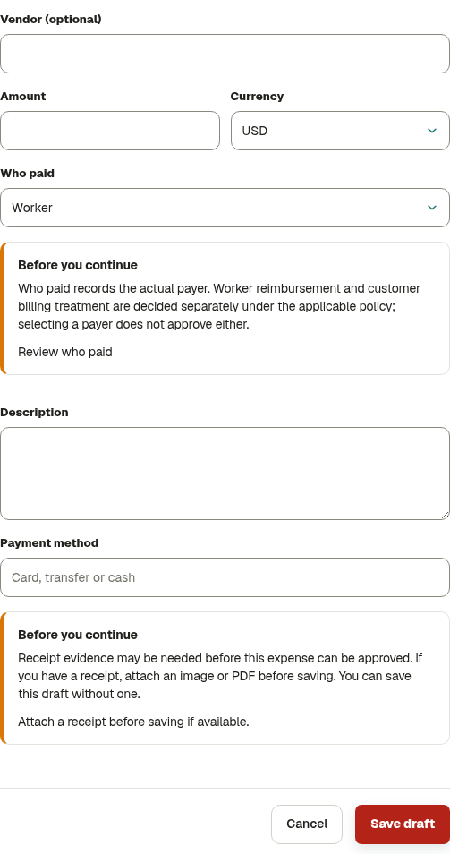
Fill the actual amount/currency, payer/payment method and supporting evidence. These source facts are reviewed separately from customer recovery.
J&A · Original BBS pre-issue · Historical snapshot
Chief · one shared crew receipt
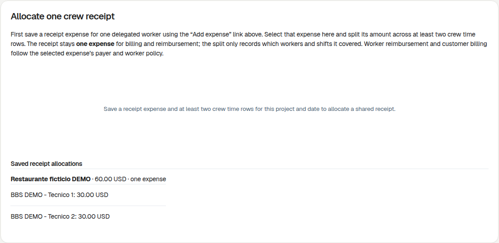
Record one purchase and allocate its total to the selected time records. USD 30 + USD 30 must equal the one USD 60 receipt.
J&A · Original BBS pre-issue · Historical snapshot
Keep the original purchase amount, currency, receipt and actual payer unchanged.
When the detail says Verified currency conversion needed, open Review expense classification and read the readiness message. The current screen explicitly states that a conversion cannot be entered there.
Use Help → Contact support (admin@j-aautomation.com). Supply expense/project ID, original currency/amount, exact warning and genuine rate evidence. Ask for the supported verified conversion/history procedure.
After that supported process completes, reopen the expense and check the project-currency amount and Finance readiness before billing.
J&A · Original BBS pre-issue · Historical snapshot
Review an active queue · Owner and Finance handoff
Choose the project in Approvals and apply the filter. Open an item still waiting for review, rather than only looking at the finished empty queue.
As operational reviewer, check worker/date/actual duration or expense, activity, receipt and correction context. Click Approve when correct; otherwise request changes with the specific reason.
In Finance review, inspect the operationally approved item. Choose Commercial treatment: Billable or Non-billable for time.
When an expense says Classify this expense before Finance review, open Classify expense in Finance, save payer/recovery/reimbursement decisions, then return.
Click Record Finance review. Reopen the source or filtered queue and verify the saved treatment. An empty queue verifies completion after the actionable example.
J&A · Separate onboarding lab · Read-only demonstration
Active review · return eight hours with a reason
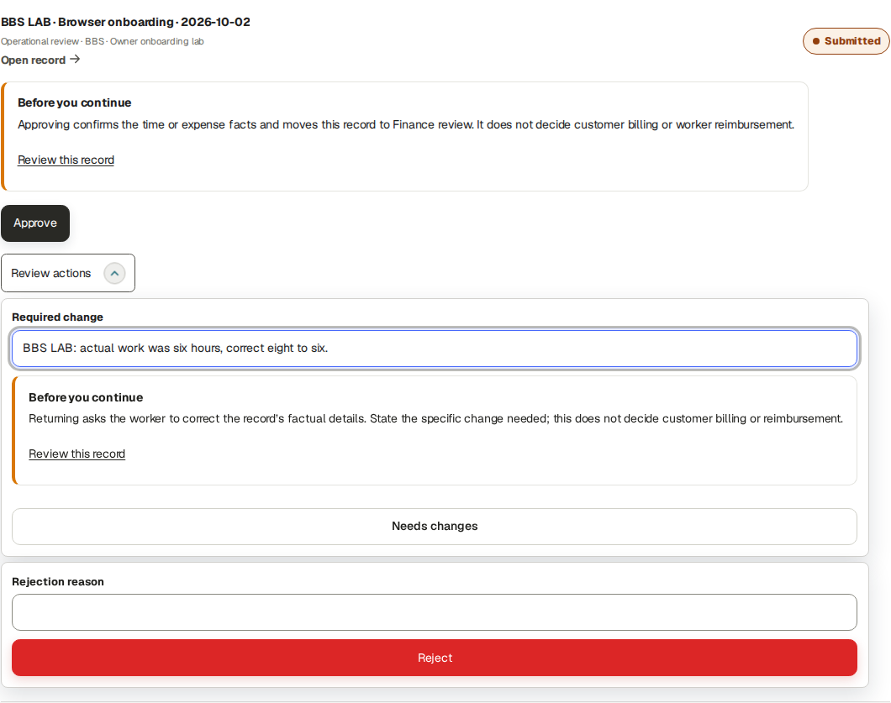
Review actions → Required change → Needs changes. The reviewer enters why eight hours must become six. This is an actionable submitted record, before the final cleared queue.
J&A · Separate onboarding lab · Read-only demonstration
Returned source · saved Needs changes state
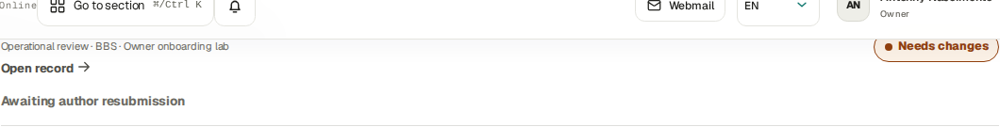
The source is returned, with its factual correction reason retained. Returning work does not decide customer billing or reimbursement.
J&A · Original BBS pre-issue · Historical snapshot
Correct time by its current state
State
Procedure / preserved history
Unsubmitted draft
Open the saved draft; Edit/Save the actual facts. Delete/withdraw only the permitted unsubmitted draft, including linked-pair handling.
Submitted
Use the reviewer’s request for changes, or the record’s permitted withdrawal. Submitted facts are not silently editable.
Returned / needs changes
Follow the record’s correction/edit action; supply the reason and corrected facts, then resubmit. Review both operational facts and Finance treatment again.
Approved, no active correction
Use Create correction on the approved record, with the actual reason and replacement facts. Original approved history remains linked.
Already in a draft/settlement
Inspect reservations and locks. Correct through the supported source lifecycle; recalculate/review an unissued invoice using its reason field. Finalized obligations require their financial correction flow.
Issued invoice
Use the authorized void or linked Credit/Debit/Correction adjustment flow. A new source cannot overwrite the old invoice snapshot.
J&A · Separate onboarding lab · Read-only demonstration
Locate the original eight-hour source by worker, date, activity and state. Open its details. If submitted, request changes in Approvals with the factual reason; if approved, open its available corrected-draft form.
Enter six actual hours and a reason explaining the two-hour correction. Preserve actual dates/category/activity and linked receipt context. In the Owner returned-record form click Create owner override draft. Its exact heading is Create corrected draft; a linked correction cannot be edited after creation. Review first or withdraw an unsubmitted correction and start again.
Open the linked correction, check the replacement values and use its individual Submit action in the record detail or Time register. Review the exact linked correction before submission; the weekly selector may also include eligible correction drafts. This exercise uses individual Submit. The reviewer uses Approve after checking the correction; Finance records the intended commercial treatment.
Reopen Time and the correction history. Confirm the replacement is the active source and the original remains traceable, rather than two independently eligible records.
For an unissued invoice affected by the correction, open its details, enter Recalculation reason and click Recalculate and review draft. Review included/excluded sources and totals before approving again.
J&A · Separate onboarding lab · Read-only demonstration
Returned source · six-hour owner correction
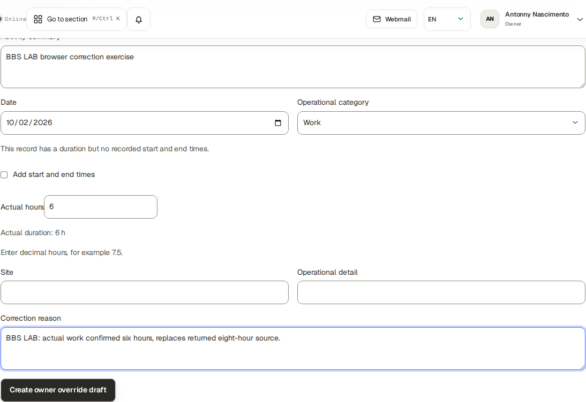
Create corrected draft: set Actual hours to 6, enter Correction reason, then Create owner override draft. A linked correction cannot be edited after creation; review before saving.
J&A · Separate onboarding lab · Read-only demonstration
Linked correction · original eight hours preserved
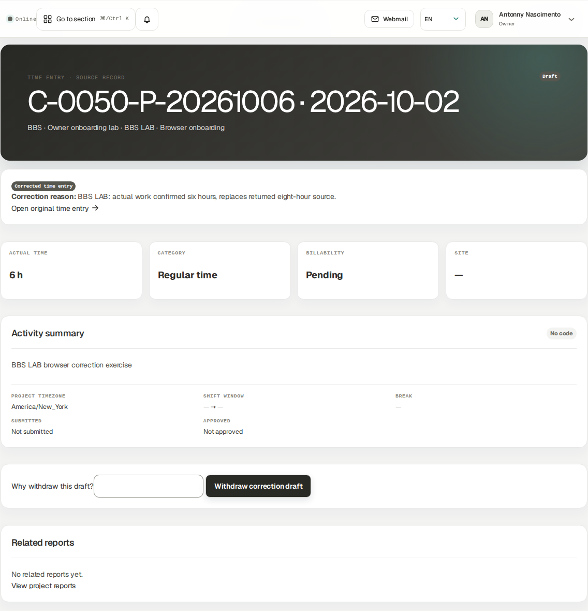
The isolated browser created the six-hour linked correction draft. The original eight-hour source remains part of traceable history.
J&A · Separate onboarding lab · Read-only demonstration
Correction submitted · ready for review
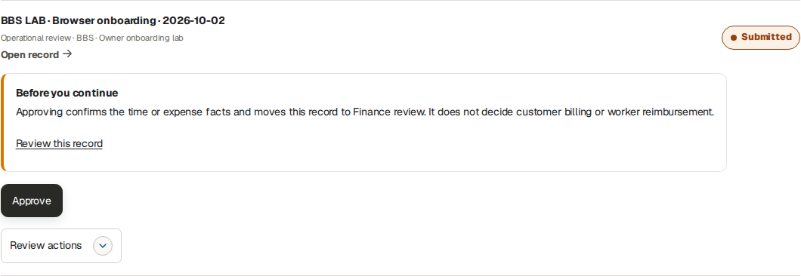
After submission the linked correction appears in the approval flow. Check the resulting active source after operational and Finance review; do not submit a standalone duplicate.
J&A · Separate onboarding lab · Read-only demonstration
Linked correction · individual Submit control
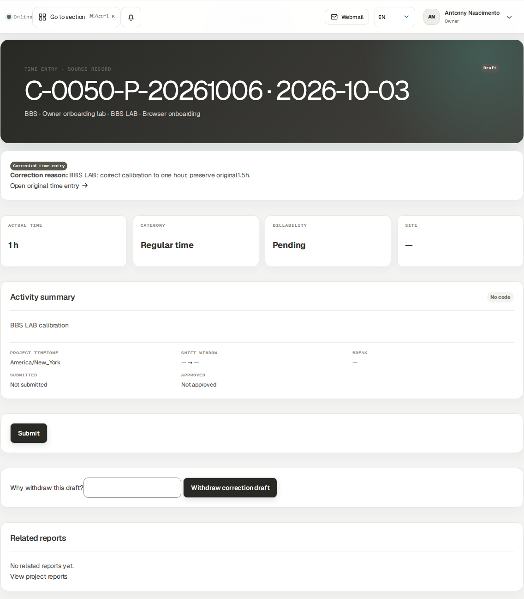
Owner-authored unsubmitted correction details now expose Submit. Review the exact linked correction and use this individual control or the Time register; do not assume the weekly selector excludes corrections.
J&A · Separate onboarding lab · Read-only demonstration
Linked correction · saved Submitted state
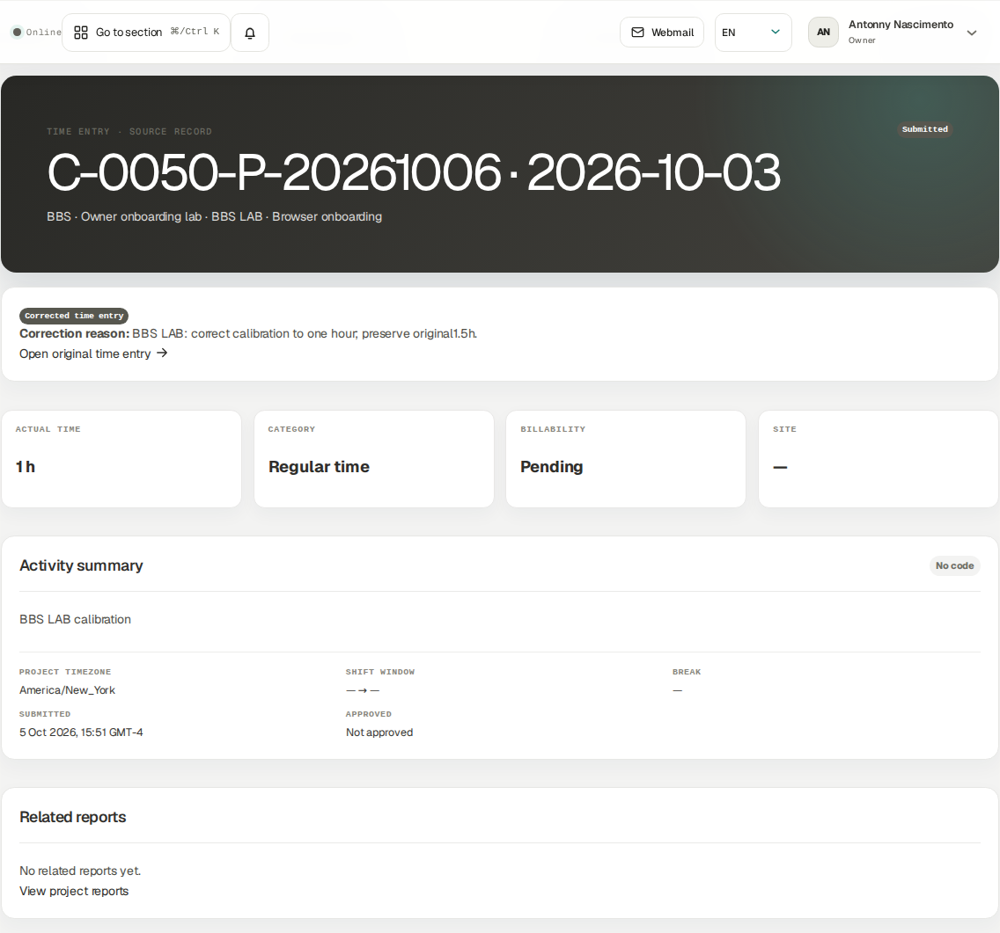
The second onboarding-lab correction changed 1.5 hours to 1 hour and submitted through its detail control. The original and replacement stay linked.
J&A · Separate onboarding lab · Read-only demonstration
Finance review · six corrected hours and commercial treatment
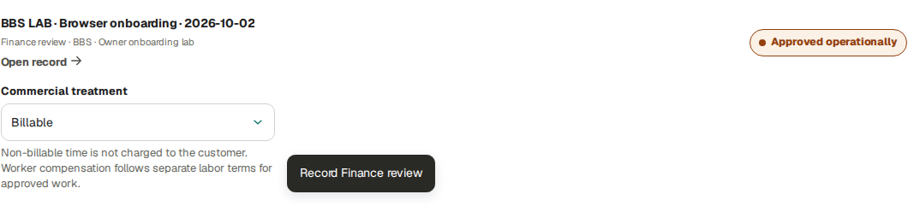
After operational approval, select Billable or Non-billable and click Record Finance review. This actual active BBS LAB card demonstrates the step before the cleared queue.
J&A · Separate onboarding lab · Read-only demonstration
Corrected time · Finance review saved Billable
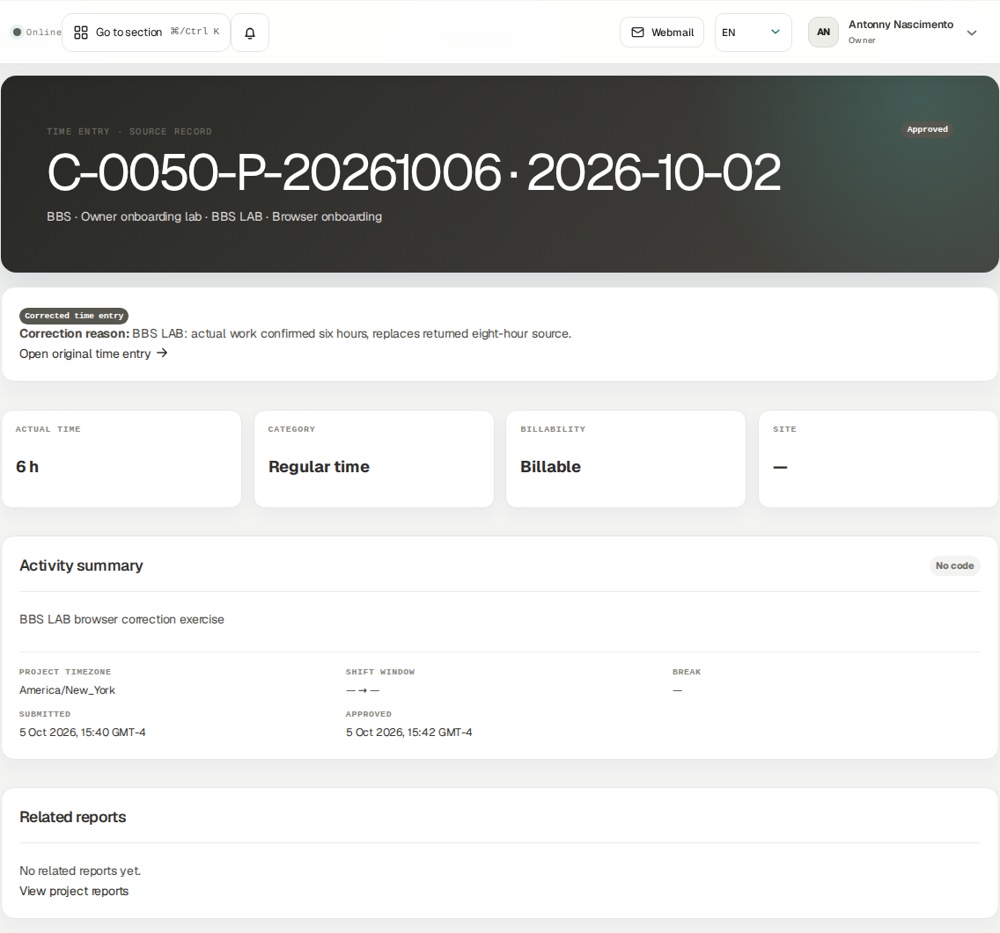
Record Finance review persisted Billable treatment for the operationally approved six-hour linked correction. The source remains linked to the preserved original.
J&A · Original BBS pre-issue · Historical snapshot
After submission, open Approvals, choose the training project and apply the filter. Review the operational source facts, then use Approve or the available changes/rejection action with a reason.
In the same workspace, scroll to Finance review. For approved time choose Commercial treatment: Billable or Non-billable, then click Record Finance review.
For an expense that says Classify this expense before Finance review, click Classify expense in Finance, save its treatment, return and record Finance review.
To inspect the example hours, open Time → Filter time entries, select the training project, dates 1–4 October, Approved, all workers and all categories, then click Apply filters.
J&A · Original BBS pre-issue · Historical snapshot
Stage 1 · six approved records, 35 hours
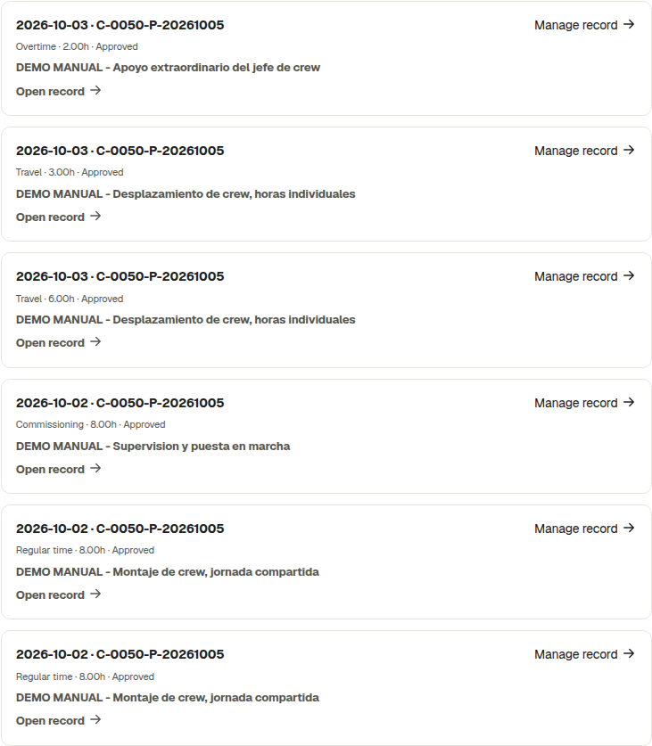
Dates 2–3 October: 8+8+8+2+3+6 = 35 actual hours. All six sources are Approved; their Finance review is also saved.
J&A · Original BBS pre-issue · Historical snapshot
In Finance, review/classify its commercial treatment: at cost, plus markup or included. Check the person, date, payer and category policy.
Record Finance review. All four example expenses are approved, classified and reviewed.
The client expense invoice has three additional charges: 22 + 100 + 60 = USD 182. Tools are included, so they add no expense charge.
J&A · Original BBS pre-issue · Historical snapshot
Stage 1 · the four approved expenses
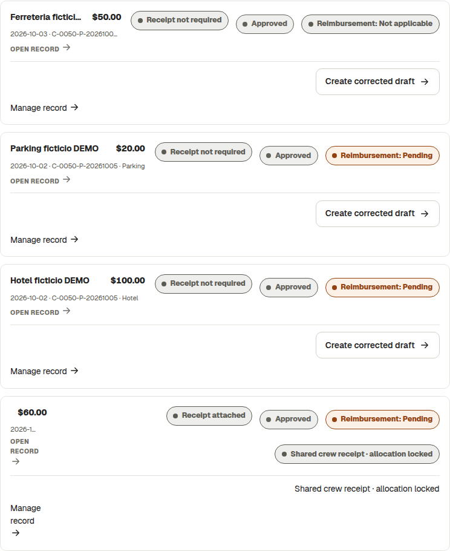
Parking, hotel, one shared meal and company-card tools. Their saved Finance classifications/reviews produce USD 182 customer recovery from USD 230 spent.
J&A · Original BBS pre-issue · Historical snapshot
Finance review · completed queue
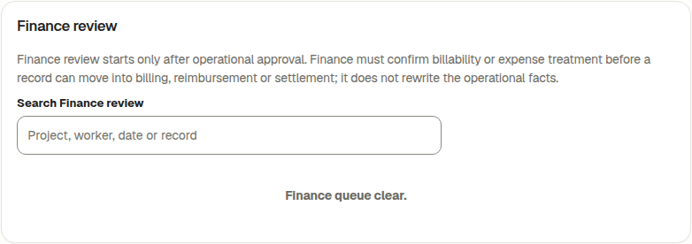
Approvals → selected BBS training project → Finance review. After the saved reviews the app shows Finance queue clear. Commercial review follows operational approval.
J&A · Reference procedure · Scope stated on this page
Reports and customer acceptance · distinct evidence
Record
Purpose and role handoff
Time source
Actual duration/activity, submitted by worker/chief, reviewed operationally and commercially.
Daily report
Completed work, blockers and next steps; worker submits and Owner/PM reviews.
Technical / PLC report
Diagnosis, change, validation, impact and backup/rollback evidence, with author/date.
Period report
Finance/Owner generates a snapshot of reviewed sources for selected dates and audience.
Client Sign-off
Customer acceptance evidence bound to that precise period report version and PDF.
Invoice
Customer charge snapshot and later numbered issue; it does not replace technical evidence.
J&A · Reference procedure · Scope stated on this page
Worker opens Reports → Daily reports and click New daily report. Choose assigned Project and actual Date (Owner also chooses the entitled Worker), then fill Shift summary, Tasks completed, problems/corrective actions, open items and next-day plan.
Click Save daily report, reopen the saved draft and verify factual content/attachments. Use its Submit action when ready.
Owner/PM opens the submitted report and reviews the operational facts. Click Approve report when the facts are correct, or use Review actions to return with a reason.
Check the register’s saved state and report history. If returned, correct the draft through the report’s permitted edit/submit flow.
For Technical / PLC, create the appropriate technical record instead: include diagnosis, changes, validation/result, production impact, risks, rollback plan and actual backup evidence. Required safety review is a separate responsibility.
J&A · Separate onboarding lab · Read-only demonstration
Daily report · actual worker/date and completed work
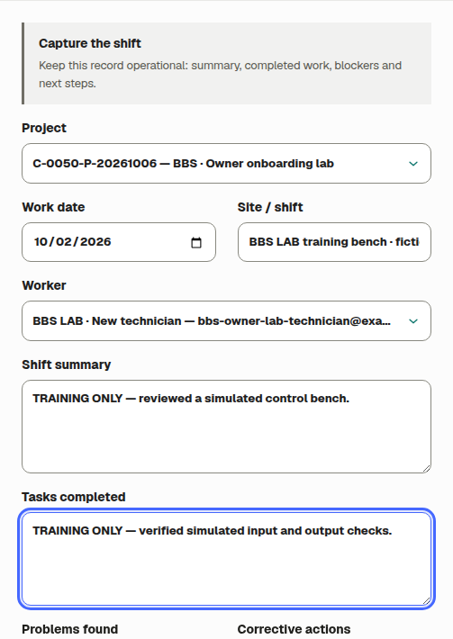
Separate onboarding lab, New technician worker: actual Project, Work date, Worker, Shift summary and Tasks completed controls. This read-only filled form was not saved again; the earlier separate Daily report submission/approval is shown next.
J&A · Separate onboarding lab · Read-only demonstration
Submitted Daily report · active approval action
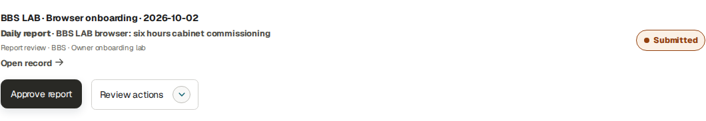
The isolated Owner reviews the submitted Daily report and approves its facts. One approved Daily report later appears in the onboarding-lab period record.
J&A · Separate onboarding lab · Read-only demonstration
Click New technical report. Select Project, Work date, System / machine and the entitled Worker when entering on their behalf.
Fill the actual problem, diagnosis, work/change, validation/result, production impact, risks and rollback detail. Attach genuine backup/change evidence when applicable; check the safety-related requirement.
Click Save PLC report. Reopen the saved draft, review the facts and click Submit for review.
Owner/PM opens Approvals → Reports, reviews the technical facts and clicks Approve report, or returns via Review actions with a reason.
If a customer report should include technical detail, refresh a new period version with Hours, activity and selected technical reports, then explicitly select the approved technical records. Do not assume they are added to an existing approved version.
J&A · Separate onboarding lab · Read-only demonstration
Technical report · approval and readable selected details
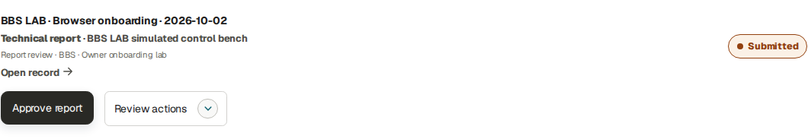
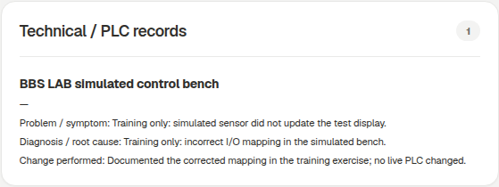
Separate onboarding lab: Submitted simulated-bench report had Approve report, then Approved was verified. The rebuilt selected-report UI uses readable labels, with no raw JSON and no 390 px overflow. Future PDF detail mapping passed output tests; the stored earlier v3 PDF is preserved, including its historical blank Detail cell. No real PLC change occurred.
J&A · Reference procedure · Scope stated on this page
As Owner/Finance expand Refresh period reports, then click Open period refresh. Select Project, Period start, Period end and Report language. Confirm approved source readiness for this scope.
In Customer report content, select Hours only, Hours and activity summary, or Hours, activity and selected technical reports. Technical details enter the customer file only when deliberately selected.
If technical content is selected, choose the intended approved records in Technical reports to include. Review customer visibility before clicking Refresh reports.
Open the created customer period record in Client Sign-off. Review the exact source/version; use Approve customer report, then Generate report for the selected language. Wait for that PDF to become Ready and download/review its exact version.
Keep internal cost/pay/margin outputs private. Creating this period file neither issues an invoice nor records customer acceptance.
J&A · Separate onboarding lab · Read-only demonstration
Refresh period records · customer-facing content choice
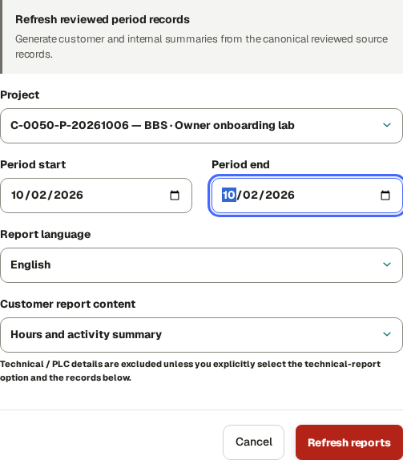
Refresh period reports → Open period refresh: select project/date scope/language and Hours and activity summary. Refresh reports created customer/internal record snapshots. The customer report was subsequently approved, its English PDF generated and downloaded; genuine sign-off remains pending.
J&A · Separate onboarding lab · Read-only demonstration
Approved customer period · English PDF Ready and Download
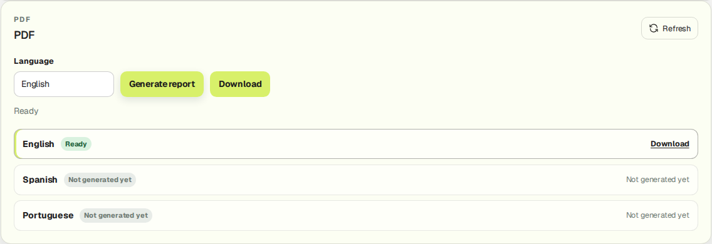
The isolated browser approved customer period version 2, generated its English artifact and downloaded the native Ready PDF. Other languages remain Not generated yet until explicitly requested.
J&A · Reference procedure · Scope stated on this page
Open the ready period record. Compare project/dates/version and the file presented to the customer. Review acceptance readiness and any source-change warning.
Obtain the signed copy from the customer using the company’s real acceptance process. In the record’s sign-off form, upload Signed PDF copy (complete PDF, maximum 20 MB), fill Signer name, optional Signer identity and actual Customer signature date for that version.
Click Record verified signed-copy evidence only when the evidence is valid. If scanning is pending, use Retry after security scan, then Complete sign-off with saved PDF; do not upload the same evidence again. Reopen the record and check verified state and the evidence/version association.
If underlying approved sources change, prepare a replacement report and obtain acceptance for that replacement. A previously signed report remains preserved and is not silently rewritten.
To invalidate a mistaken acceptance, the authorized Owner/Finance opens Invalidate sign-off, fills Reason for invalidation and clicks Confirm invalidation, then follows the return/dispute or replacement flow.
J&A · Separate onboarding lab · Read-only demonstration
Exact version binding · signed-copy evidence form
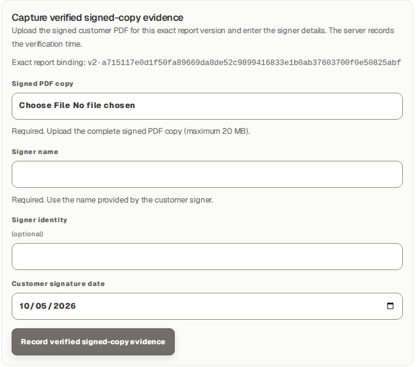
The form binds the signed PDF to version 2 and its snapshot hash. Upload a genuine signed copy, enter actual signer/date and Record verified signed-copy evidence. The example fields remain empty; the suggested date is not signature evidence.
J&A · Separate onboarding lab · Read-only demonstration
Training acceptance, invalidation and a replacement version
For actual operation, obtain the genuine complete signed copy of the exact customer-safe report. In the separately authorized training exercise, the operator used a conspicuously marked synthetic file instead. Open the Ready version 2 record, select Signed PDF copy, enter signer/identity/actual date and Record verified signed-copy evidence.
The training UI showed Verified evidence, fictional signer, server verification time and the exact v2/hash binding. This verifies the application transition; the uploaded fixture was not_scanned under optional scan policy, with no scan job or invented clean result.
Expand Invalidate sign-off, fill Reason for invalidation and Confirm invalidation. The lab became Invalid / superseded; previous conformity, snapshot/hash and native v2 PDF remained preserved.
Open Refresh period reports → Open period refresh for the same scope. Repeating identical Hours and activity summary kept the version. Choosing Hours, activity and selected technical reports and the approved simulated bench record produced version 3.
Version 3 initially showed Needs report. The Owner clicked Approve customer report → Generate report, waited for Queued processing, then downloaded the English Ready PDF. The fresh record became Ready for signature, bound to v3/hash. Obtain acceptance for that exact new version; version 2 acceptance does not cover it.
J&A · Separate onboarding lab · Read-only demonstration
Separate onboarding lab: marked synthetic signer and version 2 hash. The UI state transition was tested; no genuine customer signature or acceptance occurred. Invalidation subsequently retained this evidence and the original native v2 PDF.
J&A · Separate onboarding lab · Read-only demonstration
Replacement v3 · Ready after fresh approval and generation
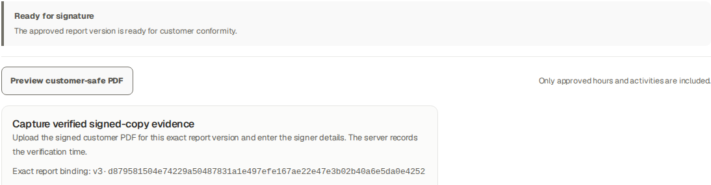
Separate onboarding lab: after selecting the approved simulated Technical report, v3 moved Needs report → Approve customer report → Generate report → Queued → Ready for signature. English Download succeeded. V2 evidence remains preserved; no v3 signature or real customer acceptance is claimed.
J&A · Original BBS pre-issue · Historical snapshot
In 1 Client / project, choose the project and stream in Project and billing stream. Click Next; review 2 Billing stream and 3 Labor / expenses.
At 4 Period, fill Period start and Period end. Click Check selected period, then Next. Suggested dates come from cadence; a manual change is deliberate.
Review 5 Included records and 6 Excluded / pending. Follow links to resolve missing approvals, terms, locked sources or coverage; do not duplicate the sources.
Review 7 Taxes, 8 Invoice data and 9 Banking / payment: identity, PO, dates, terms, recipient and payment instructions.
Review 10 Commercial adjustments using the approved workflow, then 11 Preview. Check amounts and unit labels.
At 12 Save / issue, click Save invoice draft. Wait for success and open the saved Draft in Invoices.
J&A · Original BBS pre-issue · Historical snapshot
Create invoice · project/stream and review stages
Corrected capture: the original BBS Labor · Manual stream is selected, matching the initial labor example. The twelve stages identify what to review; this read-only capture did not create another invoice.
J&A · Original BBS pre-issue · Historical snapshot
Create invoice · service-period dates
Fill Period start and Period end. Click Check selected period and Next. Service period is separate from invoice date and due date.
J&A · Original BBS pre-issue · Historical snapshot
Labor draft · six sources, USD 2,230
Stage 1: 35 hours billed at the dated customer rates. Appendix A contains the later final issued PDF with the same sources and total.
J&A · Original BBS pre-issue · Historical snapshot
J&A · Original BBS pre-issue · Historical snapshot
Customer expense draft · USD 182
Three customer charges from four source expenses: USD 22 parking + USD 100 hotel + USD 60 shared meal. Appendix B contains the later final issued PDF with the same expense lines.
J&A · Original BBS pre-issue · Historical snapshot
Record/submit the six stage-2 parts for 5 October. Obtain operational approval and Finance review.
Choose Labor · Weekly, period 5–11 October 2026.
Save the draft and verify USD 2260. Additional same-day/week parts are marked as already covered and add no further charge.
The PDF keeps hours, days and weeks separate and preserves 7.5 h actual recorded time.
Download the PDF. The project now has 42.5 h accumulated: 35 h stage 1 + 7.5 h stage 2.
J&A · Original BBS pre-issue · Historical snapshot
Labor draft · hours, full day and full week
Two hours × USD 80 + one day × USD 600 + one week × USD 1,500 = USD 2,260. Additional covered parts are not another full-unit charge. Appendix C contains the later final issued PDF with the same grouped quantities and total.
J&A · Original BBS pre-issue · Historical snapshot
Click Billing → Invoices and open the saved Draft. Review its preview and calculated totals.
Click an underlined editable presentation field or Edit Invoice Details. Fill only the intended date, terms, Purchase No. or text/contact/bank fields.
Click Save Details and wait for confirmation. Reload the draft and compare the saved values before downloading.
Click Download PDF · Preview. Open the downloaded file and check customer, issuer, PO, period, quantity units, subtotal, tax and total.
Change hours/rates/expenses through their source or commercial correction workflows, review approvals and use the permitted draft refresh/recalculation path. Invoice presentation edits do not replace those financial workflows.
J&A · Original BBS pre-issue · Historical snapshot
Invoice detail edits · where each value is saved
Edited field
Meaning / save scope
Invoice date / Due date
Date for this draft. An empty explicit due date uses invoice date plus payment terms.
Payment terms / past-due notice
Current draft and its underlying stream. Review the effect on future draft defaults.
Purchase No. / PO
Existing stream PO override, or project PO when there is no stream override. Check the project/stream after an intended change.
Bank / company contact fields
Shared issuer settings for that currency. They can affect other unissued drafts using the issuer.
Hours / rates / expenses / tax / totals
Financial source/calculation workflows, not a cosmetic amount override in presentation fields.
Save Details / PDF Preview
Save first, wait for confirmation and reload. Download the PDF after verifying the saved preview.
J&A · Original BBS pre-issue · Historical snapshot
Draft details · saved invoice and due dates
Open the saved draft, choose the editable detail field or Edit Invoice Details, and Save Details. Date changes belong to this draft.
J&A · Original BBS pre-issue · Historical snapshot
Download the actual draft PDF
Click Download PDF · Preview after reviewing the saved draft. This screenshot illustrates the preview stage. The three FINAL issued application downloads, obtained after approval and issue in isolated training, are appended unmodified and embedded as attachments.
J&A · Original BBS pre-issue · Historical snapshot
Select the approved invoice issuer and its currency. Check existing issued numbers and dated numbering policies before adding another policy.
Enter the company-approved Prefix and Digits. A neutral isolated example is TRAINING with 6 digits, producing TRAINING-2026-000001. This is illustrative, not a production recommendation.
Enter the approved Effective date and genuine Accountant approval date/time. Confirm the time basis displayed by the form. The synthetic dates in historical BBS fixtures do not establish accountant approval.
Save the numbering policy once and inspect the saved issuer/currency/prefix/date scope. Resolve overlapping policies rather than reusing numbers. Then follow Final invoice issuance.
Isolated training form only: Legal entity, Prefix, Digits, Effective from and Accountant approved at. The displayed timestamp is synthetic fixture data, not an accountant approving production. Click Save numbering policy only with genuine approval in the real system.
Review the draft’s client/issuer/currency, source dates, lines, full-unit grouping, PO, taxes, due date and payment instructions. Resolve every readiness message, including required source review, legal authority and customer sign-off.
Click Approve. Wait for the detail state to become Approved. Approval is still before issue and the preview is still unnumbered.
With the correct effective numbering policy configured, click the actual Issue invoice action. Confirm the issue warning once. The application assigns the final number and locks the financial snapshot.
Wait for the final PDF artifact to become Ready. Click Download PDF, open the file and check INVOICE, its assigned invoice number and total. A preview watermark means you downloaded the review-stage file.
Reload the saved detail and verify Issued state and number. The annex supplies the native final files for USD 2,230 labor, USD 182 expenses and USD 2,260 mixed-unit labor.
Isolated original BBS labor invoice, USD 2,230: Issued and unpaid, Invoice · PDF Ready, Open PDF and Download PDF. This is the issuance checkpoint. Later Paid expense and partially paid mixed-labor examples belong to collection, not this step. The final native master is unchanged.
J&A · New Accounting demo · Read-only demonstration
Dispatch · explicit email consent and failure recovery
Open the issued invoice and review the canonical Ready PDF and intended recipient. Downloading a file alone does not deliver it.
Expand Send by email. Fill the actual Invoice recipient email. In Send the invoice PDF to this address? choose Yes, send this email, then click Send by email. This is explicit delivery consent.
Inspect the recorded email state. Queued is not sent; SMTP acceptance would still not prove inbox delivery. For Email delivery error; automatic retry pending, inspect the delivery configuration with the operator and the next scheduled retry.
This panel has no manual Retry button: configured processing retries transient errors. Ask the operator to investigate terminal/uncertain failures. The tested same recipient/PDF/consent resubmission reused one event; the worker’s second attempt failed again with SMTP unconfigured.
For completed delivery outside the app, retain genuine delivery evidence and use More actions → Mark sent. It records manual delivery only; it does not send an email. This control is reference, not a tested real delivery. Collection is separate after money is received.
J&A · New Accounting demo · Read-only demonstration
Email delivery error · actual queued-event retry state
New Accounting demo: the saved training recipient has Email delivery error; automatic retry pending. Blank/reset form fields do not erase the retained event. Configure the delivery service through the operator before expecting a successful retry.
J&A · New Accounting demo · Read-only demonstration
Issued correction · linked credit and void safeguards
Open the original numbered invoice and its collection history. Keep its master, sources and original total preserved.
For a mistaken receipt, expand Collections and reversals. Fill Reversal amount, Effective date, Reason code: Entry correction and the required factual reason. Click Reverse payment. Reverse the relevant receipt event; a credit note is not a payment reversal.
For an authorized commercial change, expand Create adjustment: Credit, Debit or Correction, positive amount and required reason. Credit creates a linked negative draft. Review it, then Approve → Issue invoice with the report language and proper numbering policy. There is no direct issued-document Replace control.
Review the new issued credit’s Ready PDF and link to the original. Use Review credit in ledger to inspect and reconcile the linked credit and invoice balances. Follow the next chapter’s documented support handoff for allocation/refund requirements; this interface has no general self-service allocation/refund procedure. A credit balance owed to the customer is not a new customer collection.
A void request is blocked while collections remain. Read the instruction and reverse only applicable receipts with genuine reasons before an authorized void. The lab separately created/issued an uncollected USD 10 Debit adjustment, then More actions → Void reason → Void. Its number/history/master remained; it was not deleted.
J&A · New Accounting demo · Read-only demonstration
Linked issued credit · Ready PDF and separate credit balance
New Accounting demo: issued credit DEMO-2026-00002, USD −100. Collected is USD 0 and credit balance USD 100. Review credit in ledger; do not record a customer payment against the credit merely to clear it.
Filter by the intended client/project, currency and collection status. Open the issued invoice and compare its number and outstanding balance with bank evidence.
In Record payment, enter Amount, Received on and Reference; verify readonly Currency against the actual receipt. Click Record payment once after reviewing the confirmation notice.
Reopen the ledger and history. The isolated expense example is USD 182: a USD 100 partial collection leaves USD 82. A later USD 82 receipt changes this invoice to Paid. The separate mixed-labor USD 2,260 invoice has USD 500 collected and USD 1,760 remaining.
Record a later receipt as a separate event. Verify the summed collections and remaining receivable. Expected collection date and aging filters are planning/oversight controls.
For a mistaken payment entry, open the existing payment’s reversal action and supply a reason. Verify history retains the payment and reversal; register the correct receipt separately.
J&A · New Accounting demo · Read-only demonstration
Partial reversal · original receipt and retained reason
New Accounting demo: use the existing receipt’s reversal controls. The tested USD 100 receipt and USD 50 reversal remain separate append-only history, with USD 50 net collected.
J&A · Reference procedure · Scope stated on this page
Different worker payment periods and dates
Go here: Owner/Finance → Economic Review → select BBS · Ejemplo de manual → Source records → Settlements → Compensation settlements Live company portal · open this workspace
Configure each person’s pay method/rate in project Billing → 3. Review each person. Then use Economic Review for that worker’s compensation period and expected payment date.
Scroll to Compensation settlements. Verify the project number/name above the Worker field.
Select Worker. Fill Period start and Period end using the agreed compensation period, independently of the customer invoice period.
For the chief’s opening partial week, select BBS DEMO - Jefe de crew, 2026-10-01 and 2026-10-04. Ten approved hours × USD 40/h = USD 400.
After reviewing the existing settlements and period completeness, click Finalize compensation once. Wait for the success notification.
After saving, confirm the selected project remains BBS and reopen Settlements. The update preserves the project context after finalization; a wrong project heading must be corrected before another action.
Check the saved worker, period, Reviewed settlement, Actual paid and Remaining. USD 400 reviewed with USD 0 paid means a finalized obligation, not a transfer.
J&A · Original BBS pre-issue · Historical snapshot
Actual BBS settlement form · worker and dates
Owner/Finance selects one worker and that worker’s compensation period. Finalize compensation saves a snapshot; it does not transfer money.
J&A · Original BBS pre-issue · Historical snapshot
Three saved BBS compensation periods
Person / schedule example
Selected period
Saved compensation
Expected payment
Crew chief · opening partial weekly period
1–4 October
10 h × USD 40 = USD 400
9 October 2026
Technician 1 · manual monthly period
1–31 October
3 worked days × USD 240 = USD 720
3 November 2026
Technician 2 · manual fourteen-day period
1–14 October
Fixed USD 900 once for the selected period
16 October 2026
These three independent periods and expected dates were saved and reopened in the production browser on 5 October. At this original pre-payment snapshot all three show Actual paid USD 0, with the full amount remaining.
The chief’s additional two hours on 5 October belong to the next period and are not included in the USD 400 snapshot. Project economics show USD 2,100 total compensation; these three snapshots total USD 2,020 because that USD 80 is still outside the chief’s selected opening period.
J&A · Reference procedure · Scope stated on this page
Set different expected payment dates · exact steps
After the real bank transfer or other payment has occurred, find the correct worker and period under Actual worker or supplier payments.
Review Payee. Fill the Actual payment amount, Actual payment date, Payment reference and any Note from the bank/reference evidence from the actual transaction.
Review the on-screen payment confirmation notice. Click Register actual payment only when the evidence supports that money was transferred.
Reopen the register and reconcile actual paid, remaining balance and payment history. Record partial payments separately rather than changing the compensation rate.
J&A · Original BBS pre-issue · Historical snapshot
Initial unpaid baseline · actual-payment form
A prefilled amount is not evidence of a transfer. The Register actual payment button was not clicked; at this original baseline all three settlements are unpaid. The later isolated chief-payment sequence changes that copied obligation to fully paid.
Isolated BBS lifecycle: the copied USD 400 chief obligation already had a simulated USD 200 receipt before the additional-payment test. This differs from the earlier original unpaid baseline; technician 1/2 remain unpaid. The correct BBS project and duration sources stay selected.
Isolated BBS lifecycle: Register actual payment added simulated USD 100 to the previous USD 200. Net paid is USD 300 of USD 400. The next screenshot reverses this added USD 100 before recording the remaining USD 200.
Isolated simulated ledger: the added USD 100 payment was reversed with its reason. Net chief paid returned from USD 300 to USD 200, leaving USD 200 owed. No bank transfer occurred.
Worker payment · finalized obligation fully paid in training
The training register then recorded the remaining USD 200. Net simulated payments equal the chief’s USD 400 finalized obligation, with USD 0 remaining. Original payment and reversal history are preserved.
Compensation sources · corrected hours and retained project
Updated isolated register: Source shows 10 hrs, 13 hrs and 0 hrs; fixed-period USD 900 does not require a duration basis. Chief is USD 400 paid, zero remaining after the simulated payment sequence. Scroll horizontally for the full Timeline column.
Find the approved expense in Worker reimbursement queue. Check worker, actual payer, receipt currency, eligible reimbursement and saved status. Customer recovery is a separate figure.
After the real reimbursement has occurred, enter its factual Payment reference in the matching expense row. This simple queue records the eligible reimbursement as a whole, not a new editable expense amount.
Click Mark reimbursed once. Reopen the project and check Reimbursed state and Actual timestamp. The isolated test marked parking USD 20, hotel USD 100 and meal USD 60: USD 180 total.
If a reimbursement entry is wrong or only a partial transfer occurred, review the available financial correction/support flow. This queue does not demonstrate a partial-reimbursement or reversal control; do not change the receipt amount to imitate one.
Compare remaining queue obligations with actual evidence. USD 230 purchases, USD 180 reimbursable and USD 182 customer recovery remain different. Company-card tools create no worker reimbursement.
The isolated simulation marks USD 20 parking, USD 100 hotel and USD 60 meal reimbursed, retaining Actual timestamps. This is worker reimbursement, separate from USD 182 customer recovery.
J&A · Original BBS pre-issue · Historical snapshot
Worker and chief views
Go here: Worker → account/workspace navigation → My Pay → choose the period; Time and Expenses show that worker’s own records Live company portal · open this workspace
Workers review their own time, expenses and My Pay within their account permissions.
For stage 1, technician 1 has 11 h and USD 480 expected daily compensation for two days; reimbursable hotel/meal expenses are USD 160.
Technician 2 has 14 h and the configured USD 900 fixed compensation for the displayed period. It is not multiplied for each source part.
The chief also has Crew access for delegated people. Owner/Finance configures commercial rates and prepares invoices.
My Pay values are projections or compensation states; they do not prove a bank transfer.
J&A · Original BBS pre-issue · Historical snapshot
Worker My Pay · amount and project period
Technician 2’s 1–4 October worker view: 840 approved minutes (14 h), USD 900 approved compensation and no reimbursement. The project row and amount are enlarged instead of shrinking an entire long page.
J&A · Original BBS pre-issue · Historical snapshot
Worker My Pay · supporting activities
The same worker period’s source activities support the fixed-period result. Worker views retain compensation privacy and do not expose customer rates or internal cost.
J&A · Reference procedure · Scope stated on this page
Finance figures · economic position versus cash
Figure
Meaning / check
Actual / approved / billable hours
Actual work, reviewed work and customer-eligible time; never planning/reference hours.
Potential customer charges / WIP
Commercially eligible work; not automatically issued revenue or received cash.
Internal labor cost / direct expense cost
Company economic cost basis. Compensation is separately displayed and may overlap an internal loaded cost basis; do not add it twice.
Worker compensation / settled / paid
Calculated entitlement, finalized snapshot and recorded actual payment are separate amounts/states.
Contribution
Potential customer charges minus applicable direct cost in the view’s scope; not cash or a complete statutory profit statement.
Issued invoices / collections / receivables
Final invoice total, posted receipt events and outstanding balance. Reversals affect collection history.
Forecast / expected dates
Planning; neither future hours nor bank movements are created by a forecast.
Budget consumption
Compare contract/planning allowance with the actual applicable basis; investigate scope/currency and missing rules.
Select the project and period in Economic Review. Follow the source links for an unexpected amount.
Check assignment, dated terms, approval, currency and artifact/issue state before concluding that a number is incorrect.
J&A · Reference procedure · Scope stated on this page
Spreadsheet exports: hours, costs and revenue
Go here: Owner/Finance → Projects → BBS · Ejemplo de manual → Billing → Invoices and advanced settings → Download finance export Live company portal · open this workspace
Open the project, then click its Billing tab. Scroll below the configuration wizard to Invoices and advanced settings.
Click Download finance export. The browser downloads an actual .xlsx workbook; saving it does not create or issue an invoice.
Verify the filename’s project and dates. This manual downloaded ja-C-0050-P-20261005-finance-2026-10-01-2026-10-05.xlsx. The supplied example link opens that exact date scope.
Open the file in Excel or LibreOffice. Read Summary first, then the source sheets. If a column is narrow, widen it or scroll horizontally; do not shrink every column onto one unreadable printed page.
The normal project page has Download finance export, with dates taken from its current page scope. It does not always show a date selector. Without explicit scope the default is the previous UTC month start through today.
To request another supported scope, open the same project Billing page with periodStart=YYYY-MM-DD and periodEnd=YYYY-MM-DD in the supplied project link. Preserve the project ID and use one real start/end value each; for example change October 1–5 to October 1–6. Reload before Download finance export.
If the application displays Review period after an invalid-date error, use its Period start and Period end correction fields, then retry. The filename identifies requested bounds; it does not preserve an earlier snapshot. Compare generation time and source/issue/payment business dates independently.
J&A · Original BBS pre-issue · Historical snapshot
Actual app · download the project finance workbook
Project → Billing → Invoices and advanced settings → Download finance export. The example covers 1–5 October, including both demonstration stages.
J&A · Reference procedure · Scope stated on this page
Pre-issue finance workbook · what each tab means
Worksheet
What to read / how to use it
Summary
Project/date scope, hours, potential customer charges, direct costs, worker compensation, contribution, issued invoices, collections and forecast.
Labor
Each time source: worker/date/category, actual and billable duration, potential customer charge, internal cost, compensation and approval/billing status.
Expenses
Purchase payer, receipt amount, calculated/paid reimbursement, company cost and Finance-approved customer recovery.
Unbilled WIP
Approved source amounts not yet issued on a customer invoice. Drafts can coexist with WIP.
Daily minimum
Additional billable duration/charge from the configured daily minimum; no example rows in this download.
Invoices
Invoice state, service period, total, expense lines and collected payments. Draft is not issued or paid.
Invoice expenses
Actual expense lines placed on invoices: the BBS parking 22, hotel 100 and meal 60.
Milestones
Milestone sources/approval/amount; no milestone rows in this example.
Alerts
Finance alert code and affected record; no alert rows in this download.
J&A · Original BBS pre-issue · Historical snapshot
Pre-issue snapshot · economic meanings
Actual downloaded value
Meaning
42.50 actual / approved / billable hours
35 stage-1 hours plus 7.5 stage-2 hours. Use this date scope when comparing sources.
USD 4,490 labor + USD 182 expense recovery
USD 4,672 potential/approved operational customer charges. These are not collected cash.
USD 1,520 internal labor + USD 230 expenses
USD 1,750 configured direct company costing estimate; includes USD 180 travel and USD 50 other direct expenses.
USD 2,100 worker compensation
Separate compensation basis; not an additional copy of every internal loaded labor cost. Use the applicable pay rule and settlement period.
USD 2,922 contribution / 62.54%
USD 4,672 potential charges minus USD 1,750 direct cost. This is configured contribution, not cash or verified total employer cost. Reconcile the USD 580 labor-estimate/compensation gap in the following cost chapter.
Issued invoice and collected totals: USD 0
In this original pre-issue snapshot the three invoice examples are drafts. Their USD 2,230 / USD 182 / USD 2,260 totals appear on Invoices; none is issued or collected at this snapshot. See the separate after-lifecycle workbook for their later confirmed state.
J&A · Original BBS pre-issue · Historical snapshot
Reconcile internal costing with compensation owed
The original BBS workbook uses independently dated internal hourly cost rules. Worker compensation is calculated separately from the compensation agreement. The application does not automatically replace an internal hourly estimate with daily/fixed compensation or force these totals to match.
Same 42.5-hour scope
Original native workbook / conditional sensitivity
If labor basis is USD 2,100 instead of USD 1,520 and the same USD 230 expenses remain, direct cost = USD 2,330; contribution = USD 2,342 / 50.13%. Do not add compensation on top of the old labor estimate.
Open Economic Review for the same project and 1–5 October dates. Compare Labor source Internal cost and Worker compensation, grouped by worker/date/category/rule.
Open Commercial Configuration for the same project. Inspect dated Internal loaded cost and Worker compensation rules. Reconcile fixed USD 900 once-per-period allocation and the chief’s later USD 80 outside the opening settlement.
Agree inclusive costing assumptions with the responsible finance/accounting person. If compensation should be included in loaded labor cost, this illustrative estimate is insufficient; employer taxes, benefits or overhead may add more.
Use a supported new dated rule for approved future scope. Issued masters/finalized snapshots remain preserved; do not edit the attached workbook cells.
J&A · Original BBS pre-issue · Historical snapshot
Summary · hours, costs and potential revenue
Read the selected scope and economic labels. Potential customer charges, costs and compensation are distinct from issued invoices and collected cash.
J&A · Original BBS pre-issue · Historical snapshot
Summary · issued invoices, collection and forecast
Read the selected scope and economic labels. Potential customer charges, costs and compensation are distinct from issued invoices and collected cash.
J&A · Original BBS pre-issue · Historical snapshot
Labor · actual and billable hours (rows 1–7)
Actual and billable hours are separate from the customer rate unit. The second part of a day/week can have zero additional customer charge. Reconcile fixed pay at the grouped Summary/settlement level.
J&A · Original BBS pre-issue · Historical snapshot
Labor · rates and economics (rows 1–7)
Actual and billable hours are separate from the customer rate unit. The second part of a day/week can have zero additional customer charge. Reconcile fixed pay at the grouped Summary/settlement level.
J&A · Original BBS pre-issue · Historical snapshot
Labor · actual and billable hours (rows 8–13)
Actual and billable hours are separate from the customer rate unit. The second part of a day/week can have zero additional customer charge. Reconcile fixed pay at the grouped Summary/settlement level.
J&A · Original BBS pre-issue · Historical snapshot
Labor · rates and economics (rows 8–13)
Actual and billable hours are separate from the customer rate unit. The second part of a day/week can have zero additional customer charge. Reconcile fixed pay at the grouped Summary/settlement level.
J&A · Original BBS pre-issue · Historical snapshot
Expenses · payer, receipt and reimbursement
Receipt amount, company cost, reimbursement and customer recovery are independent. The four purchases total USD 230; eligible client recovery totals USD 182.
J&A · Original BBS pre-issue · Historical snapshot
Expenses · company cost and customer recovery
Receipt amount, company cost, reimbursement and customer recovery are independent. The four purchases total USD 230; eligible client recovery totals USD 182.
J&A · Original BBS pre-issue · Historical snapshot
Invoices · draft totals and zero collections
The original pre-issue workbook lists three Draft invoices, USD 2,230 / USD 182 / USD 2,260, with USD 0 collected. Invoice service periods can extend beyond the operational export window.
J&A · Original BBS pre-issue · Historical snapshot
Invoice expenses · the three charged expense lines
These native invoice lines total USD 182: parking USD 22 (10% markup), hotel USD 100 and shared meal USD 60. Company-card tools are included in labor and have no extra charge.
J&A · Original BBS pre-issue · Historical snapshot
Unbilled WIP · approved amounts not issued (rows 1–9)
Source IDs preserve traceability. Approved but unissued charges remain WIP; a draft preview is not an issued invoice.
J&A · Original BBS pre-issue · Historical snapshot
Unbilled WIP · approved amounts not issued (rows 10–16)
Source IDs preserve traceability. Approved but unissued charges remain WIP; a draft preview is not an issued invoice.
J&A · Reference procedure · Scope stated on this page
Download the separate expense register workbook
Go here: Expenses → Filter expenses → Project: BBS · Ejemplo de manual → Apply filters → Export filtered results → Download Excel Live company portal · open this workspace
Open Expenses. In Filter expenses, select the BBS training project and any required worker/date/status scope. Click Apply filters.
Check the active Project filter and 4 matching records. Use Export filtered results, not an unreviewed all-project export.
Click Download Excel. The actual example filename is Expenses_2026-10-02_2026-10-03.xlsx; the filtered register derives the first/last matching expense dates.
Open Expenses and Totals by currency. The USD recorded total is 230. Review source amount, payer, approval and reimbursement status. This operational export does not contain the complete Finance recovery/margin calculation.
J&A · Original BBS pre-issue · Historical snapshot
Actual app · export only the filtered BBS expenses
Expenses → Export filtered results → Download Excel. The downloaded workbook contains the four matching BBS purchases, with its own Totals by currency tab.
J&A · Original BBS pre-issue · Historical snapshot
Expense register export · the four source purchases
Receipt amount, company cost, reimbursement and customer recovery are independent. The four purchases total USD 230; eligible client recovery totals USD 182.
J&A · Original BBS pre-issue · Historical snapshot
Expense register export · reimbursement status
Receipt amount, company cost, reimbursement and customer recovery are independent. The four purchases total USD 230; eligible client recovery totals USD 182.
J&A · Original BBS pre-issue · Historical snapshot
Expense register export · totals by currency
The operational register totals purchases and reimbursement by receipt currency. This is not a customer expense invoice total.
J&A · Reference procedure · Scope stated on this page
Spreadsheet verification and original workbook attachments
Both workbooks were downloaded through the real production browser controls. The project finance workbook contains nine sheets; the expense register workbook contains two. Their OpenXML ZIPs parsed successfully, and the previews use the original cells without editing them.
Use your PDF viewer’s Attachments panel to save BBS-project-finance-2026-10-01_2026-10-05.xlsx and BBS-expenses-2026-10-02_2026-10-03.xlsx. These are renamed copies of the native downloads; their bytes are unchanged.
Compare worksheet row numbers/column letters with the landscape previews. All columns remain available in the attached originals.
Before sharing with a customer, review privacy: these internal workbooks contain worker pay, internal cost and margin. Customer invoice PDFs are separate documents.
The third original XLSX was downloaded from project Billing after the isolated invoice/collection/payment/reimbursement exercises. It covers the same BBS project and 1–5 October scope, with the original 42.5 actual hours.
After lifecycle · issued invoices and simulated collections
Read-only landscape preview from the original after-lifecycle XLSX. Confirmed training invoice states and simulated collection/reimbursement entries; no bank transfer or customer email is asserted.
Read-only landscape preview from the original after-lifecycle XLSX. Confirmed training invoice states and simulated collection/reimbursement entries; no bank transfer or customer email is asserted.
After lifecycle · recorded simulated reimbursements
Read-only landscape preview from the original after-lifecycle XLSX. Confirmed training invoice states and simulated collection/reimbursement entries; no bank transfer or customer email is asserted.
J&A · New Accounting demo · Read-only demonstration
Weekly close · reviewed sources and a later arrival
Select the intended Weekly stream and its full Monday–Sunday cadence week, not an arbitrary short range. In Close sources, fill Close period start, Close period end and Report language. Review readiness prerequisites.
Click Close sources. Reopen the stream and period records. The separate synthetic 10–16 August close created the closed period and customer/internal report snapshots.
If genuine late work arrives, enter, submit and review its actual facts through the normal source workflow. Inspect existing closed reports and issued reservations before attempting more billing.
The lab then approved and Finance-reviewed a new 0.5-hour 13 August source. It remained unlocked, unbilled and outside the existing issued invoice. The same week’s Create invoice draft returned the existing numbered invoice unchanged.
Review the contract before choosing a recovery route. This all-in fixed-price project’s separate Manual-stream test produced its full USD 79,800 contract fee, not an hourly charge for the late 30 minutes. The operator reviewed and Discard draft with a reason; it was never approved or issued.
Ask responsible Finance/support for the permitted contract adjustment or billing route. Repeating Create invoice does not append late work to an immutable master; a new stream does not turn fixed-price terms into hourly terms.
J&A · New Accounting demo · Read-only demonstration
Weekly stream · Close sources for a chosen week
New Accounting demo: Close period start/end and Report language precede Close sources. The actual 10–16 August close succeeded; a later approved 30-minute source did not rewrite its existing numbered invoice.
J&A · Separate onboarding lab · Read-only demonstration
Project closure and archive · exact tested empty-project cycle
Review actual sources/corrections, schedules and assignments, Daily/Technical reports, acceptance, issued documents/receivables, compensation and reimbursements. A zero-work fixture cannot verify closure of a financially active project.
Project detail Project closeout → Prepare closeout draft is a package/document flow, separate from project status.
On the project row expand Actions, read the status warning and fill the factual Reason. Click Begin close. Filter Status Closing and verify the saved project.
When closure prerequisites are satisfied, fill Reason and Close project. Filter Closed and verify. New assignments are unavailable while Closing/Closed.
For archive, fill Reason and Archive project. It disappears from the default active list. Select Include archived projects and Status Archived to find its preserved history.
The Archived Actions menu offers Restore project. That control was inspected but not submitted. Do not infer reopening of Closed work, late entry permission or paid obligations from its presence.
J&A · Isolated BBS copy · 6 October readiness exercise
Populated closeout · final packages and supported reopening
Review pending work, technical risks, customer acceptance, invoices, collections and worker obligations with their responsible roles. Closing a project is not evidence that those obligations are paid. The package can preserve unresolved financial history.
Open Project closeout and select only deliberately authorized customer PDFs. Choose Prepare closeout draft. Inspect both Internal audience preview and Customer audience preview; the internal register contains financial/document history, while the customer package excludes private commercial figures.
If sources changed, choose Refresh draft from current sources and review again. Replace selected customer documents changes selection; it is not approval to disclose them. Verify report acceptance/version references independently.
After reviewing the exact customer snapshot, tick I confirm publication of this exact client snapshot after reviewing the selected content. Choose Confirm client publication, then Finalize both packages. This confirmation authorizes that package content; it is not a customer signature.
Verify Revision 1 · Final and both Ready ZIP download links. Finalization also changes the project to Closed and preserves issued invoices, unpaid balances and source history. Download each intended audience ZIP and inspect closeout-summary.pdf, snapshot.json and manifest.json before distribution.
For genuinely authorized late work on the latest final closeout, the Owner can enter Reason and choose Reopen. This requires the project still be Closed, no active draft and no prior reopening of that revision. Verify the project returns to Active and a new draft revision appears; old final ZIPs remain immutable. Archived projects and older revisions do not acquire a universal unlock.
J&A · Reference procedure · Scope stated on this page
Open Generate monthly Accounting Pack. Review the prefilled previous complete month, or enter the required Period start, Period end and Report language.
Click Generate pack. The pack contains invoice/collection registers, worker/direct costs, expenses, receivables, contribution and source counts for that scope.
In Accounting Pack register wait for each artifact to become Ready. Queued is processing pending; Failed needs the available independent retry. Normal users do not run backend jobs manually.
Download and review each required PDF/spreadsheet. Reconcile issued invoices, collections, receivables and cost bases to the original registers before clicking Finalize.
Reopen the finalized version. Later source corrections require a new pack version; do not overwrite the preserved historical pack.
J&A · New Accounting demo · Read-only demonstration
Accounting demo · reviewed October pack finalized
A separate all-synthetic Owner portfolio completed 1–5 October 2026. The same dates refer to a different database/issuer history from the original BBS example; this does not repair its archived-issuer gap. These are native application Accounting outputs.
Open Accounting → Generate monthly Accounting Pack, select the intended dates/language and click Generate pack. The browser observed Queued; the operator’s normal artifact worker processed the isolated jobs.
Wait for PDF, XLSX, Invoice CSV, Expense CSV and JSON to show Ready. Download through each authenticated control. In this test all five returned HTTP 200 and matched the stored master hashes and byte lengths.
Expand Review before finalizing. Inspect Pending records, Unclassified expenses, Missing documents, Reconciliation issues and Changes since generation. Follow each review link; reconcile amounts to the same scope.
For a real pack, investigate advisories and decide with responsible finance/accounting whether the reviewed cut is fit for finalization. In this October fixture Pending, Unclassified expenses, Missing documents and Reconciliation issues were all 0, with None detected changes.
Click Finalize reviewed version. Reopen and verify final. All five native downloads before/after finalization returned HTTP 200 with identical stored hashes/lengths. Later source changes require a new reviewed version; finalization does not approve other periods’ pending work.
J&A · New Accounting demo · Read-only demonstration
Accounting period · invoices, cash and older work dates
Invoice amounts follow the issue-date period. Frozen older source links accompany the issued master as evidence even when their work dates are outside that period. Operational labor/expense costs remain in their own work/incurrence period; they are not moved to match the invoice.
New Accounting demo, 1–5 October
Native verified result
Active invoices
Two: original USD 79,800 gross and linked USD −100 credit. The USD 10 debit was void by this cut and is excluded; its number/history/native master remain.
USD 0 in this fixture. August work costs remain in August.
October contribution
USD 75,900 − USD 0 = USD 75,900. This period contribution is not the whole project’s profit; its August cost is outside this window.
Historical evidence links
Seven source links and eight manifests retain their authoritative business dates, including August work and October adjustment evidence; 19 items reconcile. Do not change work dates to make the counts match.
Compare invoice issue dates, receipt/reversal effective dates and operational work dates before comparing an Accounting Pack to a project export.
A document voided by the selected cut is excluded from that cut. A document voided later can remain in an earlier historical cut; its master is preserved in either case.
If the app reports a source/reconciliation mismatch, retain the period and contact support with the exact record/code. Do not purge old source links or rewrite an issued invoice to force generation.
J&A · New Accounting demo · Read-only demonstration
October Ready pack · review counts zero for this scope
New Accounting demo, 1–5 October: PDF/XLSX/two CSVs/JSON Ready; Pending, Unclassified, Missing documents and Reconciliation issues all zero; no changes detected. The separate August snapshot’s advisories remain historical obligations.
J&A · New Accounting demo · Read-only demonstration
October final version · five canonical downloads verified
New Accounting demo: Finalize reviewed version saved final for 1–5 October. All five authenticated native downloads matched stored hashes/lengths before and after finalization. Original BBS issued masters and the archived-issuer coverage blocker are unchanged.
The isolated browser attempted Generate pack for 1–5 October 2026. It returned ACCOUNTING_PACK_ISSUER_EFFECTIVE_DATE_GAP. The form still shows the selected dates and English language, so the Owner can investigate and retry the intended period without entering it again. Preserving the selection is successful form behavior; pack generation is blocked.
An Accounting Pack includes portfolio and historical currency/issuer records, rather than only the BBS USD invoice example. An archived issuer can still be included when historical sources refer to it. In this training clone, the blocking issuer QA-W48-EUR was already archived; archiving it again would not remove that history.
Verified training history
Why the check fails or passes
QA-W48-EUR legal revision
Valid from 1 October until 5 October 2026, with the end exclusive. It therefore does not cover any time on 5 October.
Selected pack period end
The coverage check uses 5 October 2026 at 23:59:59.999 UTC. QA-W48-EUR has no legal revision covering that instant.
J&A USD issuer, JA-USA
Its revision starts 7 September 2026 with no end. It covers the selected period end and is not the cause of this error.
Keep the intended period. Read the error and use Contact support to review the genuine issuer history and the historical sources that refer to it.
Resolve only a verified historical-data issue through the supported process. Do not extend dates, invent a successor revision or purge sources merely to force generation.
After that review resolves the coverage issue, retry the intended period, review Ready artifacts and finalize the reviewed version.
Accounting error: your selected period is preserved
The blocked form retains 1–5 October 2026 and English so the intended scope is available for investigation and retry. This confirms the form behavior; generation has failed because the archived training issuer QA-W48-EUR lacks a legal revision covering the period end. Contact support is offered. The J&A USD issuer is covered. No Accounting Pack artifact or finalization is claimed.
Select Project and Artifact type. Choose Document access: Project document or Finance, Owner and Auditor only. Confirm the intended audience. Finance, Owner and Auditor only includes all three authorized roles; it is not an Owner-only audience. Do not upload Owner-only costing or margin material under that category. Use the restricted Owner distribution channel; this form does not offer an Owner-only choice.
Choose Sensitivity: Internal, Sensitive or Customer private. Fill Description, attach File and click Upload and register hash. Sensitivity classifies the file; it does not publish a share link.
Find the registered project/file, check its hash and scan/readiness state, then use the permitted private download. A listed filename does not prove that scanning or artifact generation succeeded.
If upload fails, read the error and attach File again for retry. Register a corrected file as a new document; keep the original historical evidence.
To retire an obsolete file, expand Archive, enter the required Archive reason, then Archive document. Archive retains the master and committed metadata with an archive timestamp; it is not deletion.
Select language and customer-facing/internal audience separately when generating report outputs. Internal worker pay, loaded cost and contribution are unsuitable for an ordinary customer invoice delivery.
Private document · exact classification and saved download controls
Isolated original BBS project: a conspicuously synthetic file with restricted finance audience and Sensitive classification. Owner download matched its registered hash; a Worker on this project was denied before archive. This optional-scan fixture was not_scanned, not antivirus-clean.
J&A · Reference procedure · Scope stated on this page
Audit, notifications, security and Help · exact scope
Use Audit to inspect preserved actions and follow their record context. The isolated lab observed skill.create, worker skill.set, planning.create/update/cancel and worker availability.create/update. Audit viewing does not edit history.
Open Notifications and follow the relevant record link before acting. Marking a notification read manages attention; it is not source approval, payment or customer acceptance. The bounded test opened the inbox without marking items.
In Profile → Account security → Passkeys, use Device name / Register passkey; an existing credential offers Revoke. Authenticator app offers Enable MFA / Verify MFA / Disable MFA. Keep setup URI and one-time recovery codes private. An enabled account can require MFA even when setup is optional.
Security-control names are reference only: no production passkey, MFA or account preference was changed for a screenshot. Use your own account and the approved recovery process.
Open Help → Contact support or email admin@j-aautomation.com. Include guide revision, URL/project/record ID, exact error, time and correlation ID. Ask explicitly for issuer-history review if the Owner is also the company administrator. Never send passwords, cookies, activation links or recovery codes.
J&A · Reference procedure · Scope stated on this page
UX corrections and remaining operating limits
Finding
Current behavior / operating guidance
Settlement returns to wrong project
Finalization/retry now preserves selected project, economic view and settlement source. Browser confirmed BBS heading remains selected.
The budget screenshot now includes actual budgets and reporting switches. Review each applicable requirement before saving.
Cleared review queue taught no action
New active approval/return/correction screenshots precede completion evidence.
Owner correction detail had no Submit
An Owner-authored linked correction draft now has an individual Submit action. Use the individual control to review and submit the exact linked correction; eligible corrections can appear in the weekly selection.
Ordinary reports showed correction withdrawal
Ordinary Daily/Technical drafts now show Submit for review and omit the unrelated Withdraw correction draft action.
Issued PDF toolbar contrast / badge
Download controls now have readable contrasting labels; the Paid lifecycle badge is separately visible. Latest desktop/390px browser checks passed.
Worker payment “frequency” ambiguity
No automatic per-worker payroll cadence exists. Select independent periods and expected dates manually.
Accounting issuer date gap
Error retains selected scope and offers support; no self-service history bypass is claimed.
Wide finance rows
Use landscape worksheet previews and horizontal table scrolling. Every original worksheet column remains available in attached XLSX.
Technical details showed JSON / blank PDF detail
Current UI uses human labels and wraps at 390 px; future PDF outputs map details. Existing issued/generated masters stay preserved; review a new authorized output before delivery.
J&A · Reference procedure · Scope stated on this page
Owner completion checklist · verify the business result
Task
Completion evidence
Access and setup
Own account/role, correct environment/project, active dated assignments/delegations; approved initial and later terms cover actual work dates.
Work and correction
Actual source facts saved/submitted; operational and Finance review persisted; linked replacement active, original preserved, no duplicate eligible duration.
Reports and acceptance
Daily/Technical reviewed; correct period audience/content/version; Ready PDF reviewed; genuine acceptance bound to that version when required.
Billing and delivery
Intended source/period/issuer/tax/numbering; final assigned number and canonical Ready PDF; dispatch/email result recorded separately; issued correction preserves history.
Collections and worker obligations
Actual receipt/payment evidence; posted and reversed events reconcile remaining balances; compensation and expense reimbursement handled separately.
Exports and costing
Same project/date/currency scope; source totals reconcile; USD 580 illustrative labor/compensation gap explained; original XLSX retained privately.
Closure and administration
Weekly prerequisites satisfied; project closure/archive only through supported controls; Accounting artifact readiness, reconciliation and finalization verified.
Exceptions
Specific error and preserved scope understood; supported retry/escalation with record ID; no invented signature/approval/history or duplicate source.
J&A · Reference procedure · Scope stated on this page
Validation matrix · completed, reference and blocked
Task / evidence
Verified outcome and boundary
BBS sources and rate units
42.5 original actual hours; hourly/full-day/full-week source grouping and original USD 2,230 / 182 / 2,260 calculations checked.
Invoice issue and integrity
Three final native training masters numbered through application issue, canonical downloads/annex streams/attachments unchanged. No real accountant approval asserted.
Worker and customer ledgers
Chief simulated partial/reversal/full sequence net USD 400; expense reimbursement USD 180; BBS collections USD 682, receivable USD 3,990. Separate synthetic receipt/reversal and credit preserve original history.
Onboarding, corrections and reports
Access/assignment; 9.5 h originals, corrected 7 h; reviews; Daily/Technical approval; customer v2/v3 Ready downloads; human technical UI and future-output mapping checked. Marked synthetic v2 acceptance/invalidation passed; no real signature or v3 acceptance.
Planning, suppliers and lifecycle
Skills/plan/availability and zero actual hours verified; supplier/coordinator authorization, external profile and account-role/removal transitions verified. Only the empty fixture passed Closing → Closed → Archived; Restore not submitted.
Email / weekly closure
Explicit consent, queue, repeat-event reuse and actual configured-service failure/retry tested. Weekly close and late source tested; no SMTP inbox delivery or late-source rewrite of issued master claimed.
Accounting
Original BBS October scope remains blocked by archived issuer history. Separate synthetic October pack generated all five native formats, authenticated downloads matched masters before/after finalization, and review counts/reconciliation were zero. The earlier August snapshot retains its unresolved advisories.
Reference calculations and controls
Overtime, percentage, minimum/cap/milestone/forecast examples and zero-hour layout-copy behavior are source-grounded. No universal contract/overlapping-settlement validation is inferred.
Private documents and limits
Actual restricted upload/Owner download/Worker denial/archive retained native bytes. Fixture not_scanned: no antivirus pass. Audit/Help/Profile/Notifications routes inspected; security changes and broader document-recovery edge cases remain reference.
J&A · Reference procedure · Scope stated on this page
Evidence history · keep snapshots and outcomes separate
Capture phase
What it establishes
Original BBS pre-issue
42.5 approved actual hours, four purchases USD 230, customer charges USD 4,672. Three draft PDFs/zero issued and collected; three original compensation settlements unpaid. These remain historical screenshots/workbooks.
Isolated BBS lifecycle
Copied original sources issued as three numbered native masters. Expense collected 100 + 82; mixed labor collected 500; chief simulated payment/reversal net 400; reimbursements 180. Canonical issued downloads match their stored bytes.
Separate synthetic C-0002-P-002 portfolio: collection/reversal, linked issued credit, explicit email consent/queue/failure/retry, weekly close/late source. August Accounting retains its disclosed advisories; October native Ready/review/final passed with zero review counts and verified cross-month evidence links. This is not a new state of the original BBS workbook.
Reference procedures
Overtime/percentage/daily-minimum arithmetic, caps/milestones/forecast, zero-hour layout copy, supported foreign-currency escalation and security control descriptions are source-grounded; no additional browser pass is inferred.
The following six pages reproduce the three original two-page FINAL application downloads. Each has a final invoice number and no preview watermark. The files were produced by the genuine approval/issue workflow in an isolated training database.
Appendix
Final invoice number / example
Total
A
JA-DEMO--2026-000001 · 1–4 October labor
USD 2,230
B
JA-DEMO--2026-000002 · October customer expenses
USD 182
C
JA-DEMO--2026-000003 · 5–11 October hour/day/week labor
USD 2,260
Save exact files from the PDF Attachments panel or from the adjacent bbs-example-artifacts directory in the repository. The final pages retain their native pagination and payment instructions. Compare the final number, service period, quantity units and totals with the worked examples.